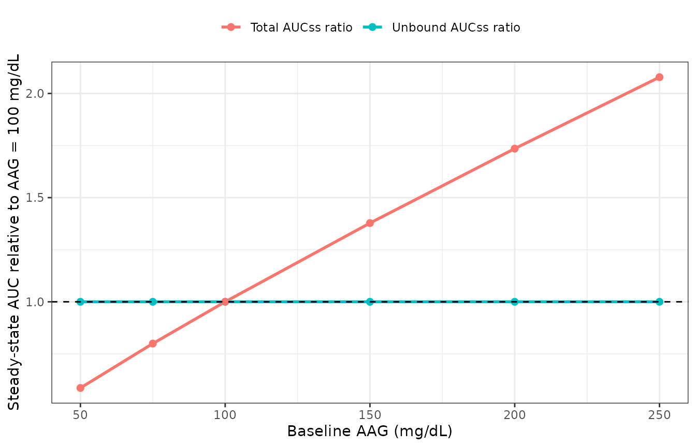
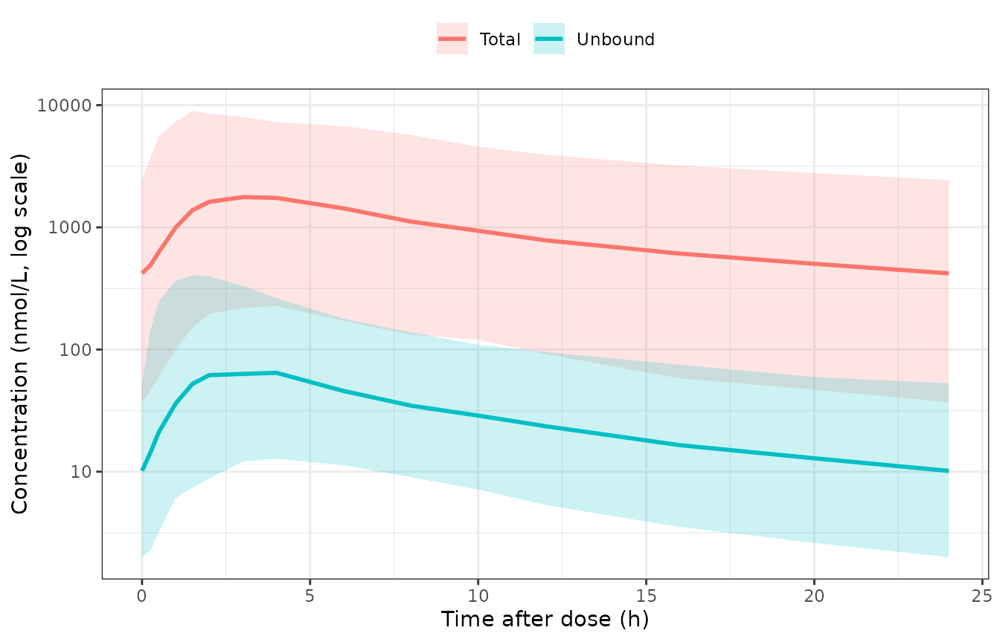
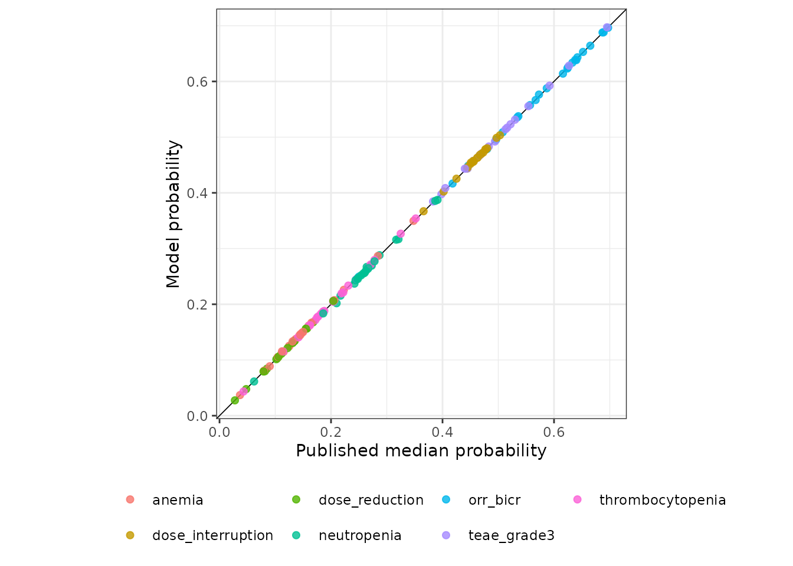
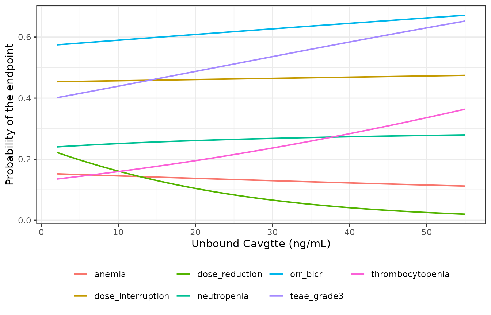

Valemetostat population PK and exposure-response in relapsed/refractory PTCL (Inoue 2025)
Source:vignettes/articles/Inoue_2025_valemetostat_ptcl.Rmd
Inoue_2025_valemetostat_ptcl.RmdModel and source
Inoue 2025 reports an updated population pharmacokinetic (PPK) model for valemetostat, an oral EZH1/EZH2 dual inhibitor approved in Japan for relapsed/refractory (R/R) adult T-cell leukemia/lymphoma (ATLL) and R/R peripheral T-cell lymphoma (PTCL), given 200 mg once daily.
- Article: https://doi.org/10.1002/jcph.70100 (PMC12649291)
- J Clin Pharmacol. 2025;65(12):1699-1711.
The model is fitted to 4635 total and 3085 unbound valemetostat concentrations from 342 participants pooled across six trials, and it describes both analytes simultaneously. Three features make it structurally unusual.
The central compartment is a binding equilibrium, not a
well-stirred pool. Valemetostat binds alpha-1-acid glycoprotein
(AAG). The state variable central holds total
drug; the unbound concentration is recovered analytically from a
single-site saturable binding sub-model with capacity bmax
(the paper’s RMAX) and dissociation constant kd. Because
Ctot = Cu + bmax * Cu / (kd + Cu), the unbound
concentration is the positive root of a quadratic.
Everything downstream is driven by unbound drug.
Clearance and both inter-compartmental clearances act on
Cu, exactly as drawn in the paper’s Figure 1. This is what
makes the model nonlinear in total drug even though unbound elimination
is linear.
AAG enters three places using only two estimated
exponents. It scales the binding capacity (exponent 0.805) and
it scales CL and F1 through one shared exponent (0.336). Since
unbound exposure is dose * F1 / CL, the shared exponent
cancels: unbound exposure is algebraically independent of AAG while
total exposure still rises with it. That cancellation is the paper’s
central pharmacological result and it is checked numerically below.
mod <- nlmixr2lib::modellib("Inoue_2025_valemetostat")
mod
#> function() {
#> description <- paste0(
#> "Three-compartment population pharmacokinetic model of TOTAL and ",
#> "UNBOUND valemetostat, fitted simultaneously to both analytes, in ",
#> "adults with relapsed/refractory non-Hodgkin lymphoma (adult T-cell ",
#> "leukemia/lymphoma, peripheral T-cell lymphoma or other NHL) and in ",
#> "healthy participants (Inoue 2025, n = 342 pooled across six trials: ",
#> "J101, J201, VALENTINE-PTCL01, J107, J109 and U106). Valemetostat is ",
#> "an oral EZH1/EZH2 dual inhibitor given 200 mg once daily. Absorption ",
#> "is a sequential linked zero-order/first-order process: the dose is ",
#> "released into the depot at a zero-order rate over duration D1 and ",
#> "then absorbed first-order with KA. The central compartment holds ",
#> "TOTAL valemetostat; the unbound concentration is recovered from it ",
#> "by a saturable single-site binding sub-model with capacity BMAX ",
#> "(the paper's RMAX) and dissociation constant KD, giving the closed ",
#> "form Cu = (-(KD + BMAX - Ctot) + sqrt((KD + BMAX - Ctot)^2 + ",
#> "4*KD*Ctot))/2. Elimination and BOTH inter-compartmental ",
#> "distributions act on the UNBOUND concentration, so the model is ",
#> "nonlinear in total drug even though unbound clearance is linear. ",
#> "Alpha-1-acid glycoprotein drives the binding capacity ",
#> "(BMAX ~ AAG^0.805) and additionally enters CL and F1 through a ",
#> "single COMMON exponent (0.336), which is the device that makes ",
#> "unbound exposure independent of AAG while total exposure rises with ",
#> "it -- the paper's central pharmacological finding. Other covariates ",
#> "(age, creatinine clearance, disease type, sex, race/country and ",
#> "NCI-ODWG hepatic function on CL; P-gp and CYP3A inhibitor ",
#> "comedication on F1) act on clearance or bioavailability, and body ",
#> "weight enters with allometric exponents fixed at 0.75 and 1. A ",
#> "study-specific factor (0.638) rescales unbound concentrations ",
#> "measured by the J101 assay, which also carries its own residual ",
#> "error. Fitted in NONMEM 7.5 by SAEM with interaction followed by ",
#> "importance sampling. Companion exposure-response models for one ",
#> "efficacy and six safety endpoints are the ",
#> "Inoue_2025_valemetostat_* family, which consume the unbound ",
#> "average concentration this model predicts."
#> )
#> reference <- paste(
#> "Inoue H, Wang X, Garcia R, Reilly B, Tachibana M, Yoo Y, Lau Y, Chen Y.",
#> "Population pharmacokinetics of valemetostat and exposure-response analyses",
#> "of efficacy and safety in patients with relapsed/refractory peripheral",
#> "T-cell lymphoma.",
#> "J Clin Pharmacol. 2025;65(12):1699-1711. doi:10.1002/jcph.70100.",
#> sep = " "
#> )
#> vignette <- "Inoue_2025_valemetostat_ptcl"
#>
#> units <- list(
#> time = "h",
#> dosing = "nmol",
#> concentration = "nmol/L"
#> )
#> # Unit convention. Inoue 2025 Table 2 prints KD and RMAX in nmol/L and the
#> # paper nowhere states a valemetostat molar mass, so the binding sub-model
#> # can only be written on a MOLAR scale without importing an off-source
#> # constant. Doses are therefore in nmol and both outputs in nmol/L. The
#> # volumes (L) and clearances (L/h) are unit-agnostic, so the unbound
#> # steady-state average Cu = dose rate / CL is reproduced exactly in whatever
#> # mass unit the dose is supplied in: 200 mg once daily over 24 h divided by
#> # CL = 520 L/h gives 16.0 ng/mL, which brackets the paper's own reference
#> # unbound Cavg values of 13.9 ng/mL (efficacy, Figure S6 caption) and
#> # 18.1 ng/mL (safety, Figure S8 caption). See the vignette Errata.
#>
#> covariateData <- list(
#> AAG = list(
#> description = "Baseline serum alpha-1-acid glycoprotein concentration. The sole binding partner in the central compartment and the only covariate the paper judged to materially affect TOTAL valemetostat exposure.",
#> units = "mg/dL",
#> type = "continuous",
#> reference_category = NULL,
#> notes = "Reported in mg/dL by Inoue 2025 rather than in the register's canonical g/L; 100 mg/dL = 1 g/L. Reference value 100 mg/dL (Inoue 2025 Figure 2 caption reference individual). Enters in THREE places with only TWO estimated exponents: BMAX (exponent 0.805) and a single COMMON exponent (0.336) shared by CL and F1. Because CL and F1 carry the same exponent, unbound AUCss = dose * F1 / CL is algebraically independent of AAG while total exposure still rises with AAG through BMAX -- this is the paper's key mechanistic result (Results 'Final PPK Model Including Covariate Effects'; Discussion). Pooled PPK cohort mean (SD) 113 (62.3) mg/dL (Table 1); patients ran higher than non-patients (Figure S1).",
#> source_name = "AAG"
#> ),
#> WT = list(
#> description = "Body weight.",
#> units = "kg",
#> type = "continuous",
#> reference_category = NULL,
#> notes = "Allometric, with exponents FIXED at 0.75 for all clearance terms (CL, Q2, Q3) and 1 for all volume terms (V1, V2, V3) -- Inoue 2025 Results and Table 2 rows 'CL ~ WT' and 'V ~ WT', both marked FIXED. Reference weight 68.2 kg (Figure 2 caption reference individual). Pooled PPK cohort mean (SD) 69.3 (15.9) kg (Table 1).",
#> source_name = "WT"
#> ),
#> AGE = list(
#> description = "Age at baseline.",
#> units = "years",
#> type = "continuous",
#> reference_category = NULL,
#> notes = "Power effect on unbound CL with reference 65 years (Figure 2 caption reference individual). Exponent -0.205 with RSE 58.4% and a bootstrap 95% CI spanning zero (-0.553 to 0.0156, Table 2), i.e. retained in the full covariate model but not statistically resolved. Pooled PPK cohort mean (SD) 59.8 (17.2) years (Table 1).",
#> source_name = "AGE"
#> ),
#> CRCL = list(
#> description = "Cockcroft-Gault calculated creatinine clearance at baseline.",
#> units = "mL/min",
#> type = "continuous",
#> reference_category = NULL,
#> notes = "Power effect on unbound CL with reference 83 mL/min (Figure 2 caption reference individual). Exponent -0.0107 with RSE 804% -- the least well-determined parameter in the model, consistent with valemetostat being eliminated hepatically. Pooled PPK cohort mean (SD) 89.2 (35.5) mL/min (Table 1).",
#> source_name = "CrCl"
#> ),
#> SEXF = list(
#> description = "Sex indicator; 1 = female, 0 = male.",
#> units = "(binary)",
#> type = "binary",
#> reference_category = "0 (male; the Figure 2 reference individual is male)",
#> notes = "Multiplicative effect on unbound CL, 1.06. Pooled PPK cohort 64.3% male (Table 1).",
#> source_name = "Female"
#> ),
#> TUMTP_ATLL = list(
#> description = "Adult T-cell leukemia/lymphoma indicator; 1 = ATLL, 0 = otherwise.",
#> units = "(binary)",
#> type = "binary",
#> reference_category = "0 (peripheral T-cell lymphoma, when DIS_BCELLNHL and DIS_HEALTHY are also 0)",
#> notes = "One of three indicators decomposing the paper's four-level 'population type' covariate (healthy participant / PTCL / ATLL / other NHL) against a PTCL reference; the Figure 2 caption reference individual is 'a male patient with PTCL'. Multiplicative effect on unbound CL, 0.828. Pooled PPK cohort 17.8% ATLL (Table 1).",
#> source_name = "ATLL"
#> ),
#> DIS_BCELLNHL = list(
#> description = "Other (non-ATLL, non-PTCL) non-Hodgkin lymphoma indicator; 1 = other NHL, 0 = otherwise.",
#> units = "(binary)",
#> type = "binary",
#> reference_category = "0 (peripheral T-cell lymphoma, when TUMTP_ATLL and DIS_HEALTHY are also 0)",
#> notes = "Inoue 2025 labels this stratum 'other NHL'. It is mapped onto the existing DIS_BCELLNHL canonical because the only study contributing non-ATLL non-PTCL lymphoma patients is J101, which the Methods describe as enrolling 'R/R non-Hodgkin lymphoma (NHL), including B-cell lymphomas, ATLL, and PTCL' -- so the residual NHL stratum is the B-cell lymphoma group. Multiplicative effect on unbound CL, 0.847. Pooled PPK cohort 5.6% (19 of 342, Table 1). See the vignette Errata: the paper's label is the histology-agnostic 'other NHL', so a future paper using an explicitly non-B-cell residual stratum should not reuse this mapping without checking.",
#> source_name = "OTHER NHL"
#> ),
#> DIS_HEALTHY = list(
#> description = "Non-patient indicator; 1 = healthy participant or non-cancer participant with hepatic impairment, 0 = lymphoma patient.",
#> units = "(binary)",
#> type = "binary",
#> reference_category = "0 (peripheral T-cell lymphoma patient, when TUMTP_ATLL and DIS_BCELLNHL are also 0)",
#> notes = "Inoue 2025 calls this level 'non-patient'; it pools the healthy Japanese participants of the J107 DDI study and J109 food-effect study with the non-cancer hepatic-impairment participants of U106 (Figure S1 caption: 'The non-patient group includes both healthy participants and non-cancer patients with hepatic impairment'). Multiplicative effect on unbound CL, 0.942. Pooled PPK cohort 21.1% (72 of 342, Table 1).",
#> source_name = "NON-PATIENT"
#> ),
#> RACE_ASIAN_OTH = list(
#> description = "Asian non-Japanese indicator; 1 = Asian and enrolled outside Japan, 0 = otherwise.",
#> units = "(binary)",
#> type = "binary",
#> reference_category = "0 (Asian Japanese, when RACE_WHITE and RACE_OTHER are also 0)",
#> notes = "The paper's covariate is a combined 'race/country enrolled' factor with four levels (Asian Japanese / Asian non-Japanese / White / Other) and an Asian-Japanese reference (Figure 2 caption reference individual is 'Asian Japanese'); the dominant Asian subgroup required by the RACE_ASIAN_OTH register entry is therefore Japanese. Multiplicative effect on unbound CL, 1.25 -- the largest non-AAG covariate effect in the model. Pooled PPK cohort 6.1% (Table 1).",
#> source_name = "ASIAN NON-J"
#> ),
#> RACE_WHITE = list(
#> description = "White race indicator; 1 = White, 0 = otherwise.",
#> units = "(binary)",
#> type = "binary",
#> reference_category = "0 (Asian Japanese, when RACE_ASIAN_OTH and RACE_OTHER are also 0)",
#> notes = "Multiplicative effect on unbound CL, 0.967. Pooled PPK cohort 39.2% (Table 1).",
#> source_name = "WHITE"
#> ),
#> RACE_OTHER = list(
#> description = "Race category 'Other' indicator; 1 = other, 0 = otherwise.",
#> units = "(binary)",
#> type = "binary",
#> reference_category = "0 (Asian Japanese, when RACE_ASIAN_OTH and RACE_WHITE are also 0)",
#> notes = "Multiplicative effect on unbound CL, 0.816. Pooled PPK cohort 12.9% (Table 1).",
#> source_name = "OTHER RACE"
#> ),
#> HEPIMP_MILD = list(
#> description = "Mild hepatic impairment indicator by NCI-ODWG criteria; 1 = mild, 0 = otherwise.",
#> units = "(binary)",
#> type = "binary",
#> reference_category = "0 (normal hepatic function, when HEPIMP_MOD is also 0)",
#> notes = "Multiplicative effect on unbound CL, 0.892. Pooled PPK cohort 21.1% mild (Table 1). Paired with HEPIMP_MOD; no severe stratum was enrolled.",
#> source_name = "HEPAT MILD"
#> ),
#> HEPIMP_MOD = list(
#> description = "Moderate hepatic impairment indicator by NCI-ODWG criteria; 1 = moderate, 0 = otherwise.",
#> units = "(binary)",
#> type = "binary",
#> reference_category = "0 (normal hepatic function, when HEPIMP_MILD is also 0)",
#> notes = "Multiplicative effect on unbound CL, 0.752 -- a 33% higher unbound exposure. The paper quantifies the same effect from the post hoc simulations as a 29% (95% CI 1%-66%) increase in unbound AUCss. Pooled PPK cohort 3.5% moderate (12 of 342, Table 1).",
#> source_name = "HEPAT MOD"
#> ),
#> CONMED_PGP_INH = list(
#> description = "Concomitant P-glycoprotein inhibitor indicator; 1 = on a P-gp inhibitor and NOT on a CYP3A inhibitor, 0 = otherwise. Time-varying.",
#> units = "(binary)",
#> type = "binary",
#> reference_category = "0 (no interacting comedication, when CONMED_CYP3A4_INH is also 0)",
#> notes = "Inoue 2025 grouped its comedication categories 'due to small sample size' into none / P-gp inhibitor / CYP3A inhibitor with or without a P-gp inhibitor, so this indicator is the P-gp-ONLY arm and is superseded by CONMED_CYP3A4_INH when both are present -- the model() code enforces the precedence explicitly. Multiplicative effect on F1, 1.29. Treated as a TIME-VARYING covariate with immediate onset and immediate loss of effect (a limitation the Discussion flags). 14 of 342 participants (4.1%) took a P-gp inhibitor (Table 1).",
#> source_name = "DDI PGPi"
#> ),
#> CONMED_CYP3A4_INH = list(
#> description = "Concomitant CYP3A inhibitor indicator; 1 = on a moderate or strong CYP3A inhibitor with or without a P-gp inhibitor, 0 = otherwise. Time-varying.",
#> units = "(binary)",
#> type = "binary",
#> reference_category = "0 (no interacting comedication, when CONMED_PGP_INH is also 0)",
#> notes = "Takes precedence over CONMED_PGP_INH per the paper's grouping ('CYP3Ai +/- P-gpi'). Multiplicative effect on F1, 1.23. 23 participants (6.7%) took a moderate CYP3A inhibitor, 1 (0.3%) a strong one and 1 (0.3%) a P-gp plus CYP3A inhibitor (Table 1). The Discussion notes the estimated magnitude is smaller than the dedicated DDI study found (4-fold with itraconazole, 1.6-fold with fluconazole) and attributes the gap to small numbers, missing comedication duration and the immediate-onset assumption.",
#> source_name = "DDI CYPi PGPi"
#> ),
#> STUDY_J101 = list(
#> description = "DS3201-A-J101 study indicator; 1 = the observation comes from the J101 phase 1 study, 0 = any of the other five studies.",
#> units = "(binary)",
#> type = "binary",
#> reference_category = "0 (J201, VALENTINE-PTCL01, J107, J109 or U106)",
#> notes = "Applies ONLY to unbound valemetostat observations, and does two separate things: it rescales the predicted unbound concentration by the estimated assay factor 0.638 (Table 2 row 'ASSAY, DS3201-A-J101 unbound adjustment factor'), and it selects a different residual error (Sigma(3,3) = 0.327 rather than Sigma(2,2) = 0.404). Total valemetostat observations are unaffected. J101 contributed 71 of the 251 ER-safety patients (Table 1).",
#> source_name = "ASSAY"
#> )
#> )
#>
#> compartmentData <- list(
#> depot = list(
#> analyte = "valemetostat",
#> units = "nmol",
#> specimen = "administration site",
#> verified = TRUE
#> ),
#> central = list(
#> analyte = "valemetostat",
#> units = "nmol",
#> specimen = "plasma",
#> verified = TRUE
#> ),
#> peripheral1 = list(
#> analyte = "valemetostat",
#> units = "nmol",
#> specimen = "plasma",
#> verified = TRUE
#> ),
#> peripheral2 = list(
#> analyte = "valemetostat",
#> units = "nmol",
#> specimen = "plasma",
#> verified = TRUE
#> )
#> )
#>
#> population <- list(
#> species = "human",
#> n_subjects = 342L,
#> n_studies = 6L,
#> n_observations = "4635 total valemetostat concentrations from 342 participants and 3085 unbound valemetostat concentrations from 339 participants; 131 total (2.8%) and 43 unbound (1.4%) records were below the limit of quantification (Inoue 2025 Results)",
#> age_range = "mean (SD) 59.8 (17.2) years (Inoue 2025 Table 1)",
#> weight_range = "mean (SD) 69.3 (15.9) kg (Inoue 2025 Table 1)",
#> sex_female_pct = 35.7,
#> race_ethnicity = c(
#> `Asian, Japanese` = 41.8,
#> `Asian, non-Japanese` = 6.1,
#> White = 39.2,
#> Other = 12.9
#> ),
#> disease_state = "relapsed or refractory non-Hodgkin lymphoma -- peripheral T-cell lymphoma 55.6%, adult T-cell leukemia/lymphoma 17.8%, other NHL 5.6% -- pooled with 21.1% non-patients (healthy Japanese participants and non-cancer participants with hepatic impairment)",
#> dose_range = "valemetostat orally once daily; 200 mg is the approved and predominant dose (J201 and VALENTINE-PTCL01), with J101 contributing a multiple-ascending-dose escalation and J107/J109 single-dose healthy-participant data",
#> regions = "Japan and non-Japanese sites (VALENTINE-PTCL01 is multinational; J107 and J109 enrolled Japanese healthy participants; U106 enrolled non-Japanese participants with hepatic impairment)",
#> hepatic_function = "normal 74.9%, mild NCI-ODWG impairment 21.1%, moderate 3.5% (Inoue 2025 Table 1)",
#> renal_function = "creatinine clearance mean (SD) 89.2 (35.5) mL/min (Inoue 2025 Table 1)",
#> co_medication = "moderate CYP3A inhibitor 6.7%, strong CYP3A inhibitor 0.3%, P-gp inhibitor 4.1%, P-gp plus CYP3A inhibitor 0.3% (Inoue 2025 Table 1)",
#> notes = paste0(
#> "Six trials: DS3201-A-J101 (NCT02732275, R/R NHL), J201 ",
#> "(NCT04102150, R/R ATLL), VALENTINE-PTCL01 (NCT04703192, R/R PTCL ",
#> "and ATLL), DS3201-A-J107 (jRCT2080225242, DDI in healthy Japanese ",
#> "participants), DS3201-A-J109 (jRCT2071200043, food effect) and ",
#> "DS3201-A-U106 (NCT04276662, hepatic impairment). Study-level ",
#> "detail is in Inoue 2025 Table S1; demographics are in Table 1."
#> )
#> )
#>
#> ini({
#> # ==================================================================
#> # All structural and covariate values are the point estimates in
#> # Inoue 2025 Table 2 ('Summary of PPK Parameter Estimates'), column
#> # 'Estimate'. The Median and 95% CI columns of that table are
#> # non-parametric bootstrap summaries (n = 462) and are NOT used here.
#> #
#> # Covariate reference values come from the Figure 2 caption, which
#> # defines the reference individual as 'a male patient with PTCL,
#> # Asian Japanese, no concomitant medication [CYP3Ai or P-gpi],
#> # normal hepatic function, weighing 68.2 kg, 65 years of age, with a
#> # AAG of 100 mg/dL, and a CrCl of 83 mL/min'.
#> #
#> # Scale conventions, both confirmed by the table's own printed
#> # summary columns rather than assumed:
#> # * Continuous covariates enter as power terms (COV/ref)^theta --
#> # their estimates are centred on 0 (age -0.205, CrCl -0.0107)
#> # and sit alongside the two allometric WT exponents in the same
#> # block, which are unambiguously exponents.
#> # * Categorical covariates enter as multiplicative ratios --
#> # their estimates are centred on 1 (ATLL 0.828, female 1.06).
#> # ==================================================================
#>
#> # ----- Disposition; CL, Q2 and Q3 act on the UNBOUND concentration -----
#> lcl <- log(520) ; label("Apparent clearance of UNBOUND valemetostat (L/h)") # Table 2, 'CL/F, L/h' = 520, RSE 10.8%
#> lvc <- log(42.5) ; label("Apparent central volume of distribution (L)") # Table 2, 'V1/F, L' = 42.5, RSE 16.2%
#> lq <- log(40.0) ; label("Apparent inter-compartmental clearance to peripheral1 (L/h)") # Table 2, 'Q2/F, L/h' = 40.0, RSE 26.9%
#> lvp <- log(3670) ; label("Apparent first peripheral volume of distribution (L)") # Table 2, 'V2/F, L' = 3670, RSE 14.7%
#> lq2 <- log(230) ; label("Apparent inter-compartmental clearance to peripheral2 (L/h)") # Table 2, 'Q3/F, L/h' = 230, RSE 9.46%
#> lvp2 <- log(2950) ; label("Apparent second peripheral volume of distribution (L)") # Table 2, 'V3/F, L' = 2950, RSE 14.7%
#>
#> # ----- Sequential linked zero-order / first-order absorption -----
#> lka <- log(0.374) ; label("First-order absorption rate constant (1/h)") # Table 2, 'KA, 1/h' = 0.374, RSE 7.32%
#> ld1 <- log(1.22) ; label("Duration of the zero-order release into the depot (h)") # Table 2, 'D1, h' = 1.22, RSE 11.8%
#>
#> # Relative bioavailability, FIXED to 1 as the estimation anchor; its
#> # covariate effects (AAG and the comedication categories) are still
#> # estimated and are applied on top of this value.
#> lfdepot <- fixed(log(1)) ; label("Relative bioavailability of the depot input (fraction)") # Table 2, 'F1, Relative bioavailability' = 1.00, marked FIXED
#>
#> # ----- Saturable plasma-protein binding in the central compartment -----
#> # The paper's RMAX is the canonical bmax (maximum binding capacity).
#> lkd <- log(221) ; label("Equilibrium dissociation constant for valemetostat-AAG binding (nmol/L)") # Table 2, 'KD, nmol/L' = 221, RSE 11.4%
#> lbmax <- log(8280) ; label("Total binding capacity at the reference AAG of 100 mg/dL (nmol/L)") # Table 2, 'RMAX, nmol/L' = 8280, RSE 10.3%
#>
#> # ----- Study-specific unbound assay adjustment -----
#> e_study_j101_cu <- 0.638 ; label("Multiplicative adjustment applied to UNBOUND concentrations measured by the DS3201-A-J101 assay (ratio)") # Table 2, 'ASSAY, DS3201-A-J101 unbound adjustment factor' = 0.638, RSE 6.76%
#>
#> # ----- Allometric body-weight exponents, both FIXED -----
#> e_wt_cl <- fixed(0.750) ; label("Allometric exponent on CL, Q2 and Q3 (unitless)") # Table 2, 'CL ~ WT' = 0.750, marked FIXED
#> e_wt_vc <- fixed(1.00) ; label("Allometric exponent on V1, V2 and V3 (unitless)") # Table 2, 'V ~ WT' = 1.00, marked FIXED
#>
#> # ----- Continuous covariate exponents -----
#> e_aag_bmax <- 0.805 ; label("Exponent of AAG on the binding capacity bmax (unitless)") # Table 2, 'RMAX ~ AAG' = 0.805, RSE 2.90%
#> e_aag_cl <- 0.336 ; label("COMMON exponent of AAG on both CL and F1 (unitless)") # Table 2, 'CL/F ~ AAG' = 0.336 and 'F1 ~ AAG' = 0.336, both RSE 18.6% -- one estimated parameter reported on two rows
#> e_age_cl <- -0.205 ; label("Exponent of age on CL (unitless)") # Table 2, 'CL/F ~ AGE' = -0.205, RSE 58.4%
#> e_crcl_cl <- -0.0107 ; label("Exponent of creatinine clearance on CL (unitless)") # Table 2, 'CL/F ~ CrCl' = -0.0107, RSE 804%
#>
#> # ----- Categorical covariate ratios on CL (reference: male, PTCL, Asian Japanese, normal hepatic function) -----
#> e_tumtp_atll_cl <- 0.828 ; label("CL ratio for adult T-cell leukemia/lymphoma versus PTCL (ratio)") # Table 2, 'CL/F ~ ATLL' = 0.828, RSE 8.73%
#> e_dis_bcellnhl_cl <- 0.847 ; label("CL ratio for other non-Hodgkin lymphoma versus PTCL (ratio)") # Table 2, 'CL/F ~ OTHER NHL' = 0.847, RSE 19.5%
#> e_dis_healthy_cl <- 0.942 ; label("CL ratio for non-patients versus PTCL patients (ratio)") # Table 2, 'CL/F ~ NON-PATIENT' = 0.942, RSE 13.1%
#> e_sexf_cl <- 1.06 ; label("CL ratio for female versus male (ratio)") # Table 2, 'CL/F ~ FEMALE' = 1.06, RSE 5.87%
#> e_race_asian_oth_cl <- 1.25 ; label("CL ratio for Asian non-Japanese versus Asian Japanese (ratio)") # Table 2, 'CL/F ~ ASIAN NON-J' = 1.25, RSE 14.4%
#> e_race_white_cl <- 0.967 ; label("CL ratio for White versus Asian Japanese (ratio)") # Table 2, 'CL/F ~ WHITE' = 0.967, RSE 9.28%
#> e_race_other_cl <- 0.816 ; label("CL ratio for other race versus Asian Japanese (ratio)") # Table 2, 'CL/F ~ OTHER RACE' = 0.816, RSE 8.81%
#> e_hepimp_mild_cl <- 0.892 ; label("CL ratio for mild NCI-ODWG hepatic impairment versus normal (ratio)") # Table 2, 'CL/F ~ HEPAT MILD' = 0.892, RSE 6.20%
#> e_hepimp_mod_cl <- 0.752 ; label("CL ratio for moderate NCI-ODWG hepatic impairment versus normal (ratio)") # Table 2, 'CL/F ~ HEPAT MOD' = 0.752, RSE 18.8%
#>
#> # ----- Categorical covariate ratios on F1 (reference: no interacting comedication) -----
#> e_conmed_pgp_inh_f1 <- 1.29 ; label("F1 ratio while taking a P-gp inhibitor without a CYP3A inhibitor (ratio)") # Table 2, 'F1 ~ DDI PGPi' = 1.29, RSE 30.3%
#> e_conmed_cyp3a4_inh_f1 <- 1.23 ; label("F1 ratio while taking a CYP3A inhibitor with or without a P-gp inhibitor (ratio)") # Table 2, 'F1 ~ DDI CYPi PGPi' = 1.23, RSE 18.4%
#>
#> # ----- Inter-individual variability -----
#> # Table 2 reports OMEGA VARIANCES on the log scale. The reporting
#> # convention is settled by the table's own two derived columns, both
#> # of which reproduce exactly:
#> # CV% = sqrt(exp(var) - 1) -- 0.249 -> 53.2%, 2.49 -> 333%,
#> # 0.0563 -> 24.1%, 1.65 -> 205%,
#> # 0.0564 -> 24.1%, 0.485 -> 79.0%
#> # Corr = cov / sqrt(var1 * var2) -- 0.613/sqrt(0.249*2.49) = 0.778
#> # 0.0629/sqrt(0.0563*1.65) = 0.207
#> # Two block matrices, exactly as the paper describes: one for CL and
#> # V1, another for KA and D1.
#> etalcl + etalvc ~ c(0.249,
#> 0.613, 2.49) # Table 2, Omega(1,1) 0.249, Omega(2,1) 0.613 and Omega(2,2) 2.49; block for CL/F and V1/F
#> etalka + etald1 ~ c(0.0563,
#> 0.0629, 1.65) # Table 2, Omega(3,3) 0.0563, Omega(4,3) 0.0629 and Omega(4,4) 1.65; block for KA and D1
#> etalbmax ~ 0.0564 # Table 2, Omega(5,5) 0.0564 [CV% = 24.1], RSE 10.8%; the paper's IIV-RMAX
#> etalfdepot ~ 0.485 # Table 2, Omega(6,6) 0.485 [CV% = 79.0], RSE 12.7%; the paper's IIV-F1
#>
#> # ----- Residual error -----
#> # Table 2 reports three 'log-additive' SIGMA VARIANCES. NONMEM
#> # log-additive error is proportional error in nlmixr2's linear
#> # space, and the residual SD is sqrt(variance). Note that the
#> # SIGMA rows use a DIFFERENT derived-column convention from the
#> # OMEGA rows above: here the printed CV% is simply sqrt(variance)
#> # (0.388 -> 62.3%, 0.404 -> 63.6%, 0.327 -> 57.2%), not
#> # sqrt(exp(var) - 1), which would give 68.9%, 70.4% and 62.2%.
#> propSd <- sqrt(0.388) ; label("Proportional residual error for TOTAL valemetostat (fraction)") # Table 2, 'Log-additive - Total', Sigma(1,1) = 0.388 [CV% = 62.3], RSE 1.69%
#> propSd_Cu <- sqrt(0.404) ; label("Proportional residual error for UNBOUND valemetostat outside DS3201-A-J101 (fraction)") # Table 2, 'Log-additive - Unbound/non-DS3201-A-J101', Sigma(2,2) = 0.404 [CV% = 63.6], RSE 2.20%
#> propSd_Cu_j101 <- sqrt(0.327) ; label("Proportional residual error for UNBOUND valemetostat within DS3201-A-J101 (fraction)") # Table 2, 'Log-additive - Unbound/DS3201-A-J101', Sigma(3,3) = 0.327 [CV% = 57.2], RSE 14.7%
#> })
#>
#> model({
#> # ---- 1. Derived covariate multipliers -------------------------------
#> # Continuous covariates are power terms on the Figure 2 reference
#> # individual; categorical covariates are multiplicative ratios written
#> # as (1 + (ratio - 1) * indicator) so that an indicator of 0 leaves the
#> # reference value untouched.
#> clCov <-
#> (AGE / 65)^e_age_cl *
#> (CRCL / 83)^e_crcl_cl *
#> (1 + (e_tumtp_atll_cl - 1) * TUMTP_ATLL) *
#> (1 + (e_dis_bcellnhl_cl - 1) * DIS_BCELLNHL) *
#> (1 + (e_dis_healthy_cl - 1) * DIS_HEALTHY) *
#> (1 + (e_sexf_cl - 1) * SEXF) *
#> (1 + (e_race_asian_oth_cl - 1) * RACE_ASIAN_OTH) *
#> (1 + (e_race_white_cl - 1) * RACE_WHITE) *
#> (1 + (e_race_other_cl - 1) * RACE_OTHER) *
#> (1 + (e_hepimp_mild_cl - 1) * HEPIMP_MILD) *
#> (1 + (e_hepimp_mod_cl - 1) * HEPIMP_MOD)
#>
#> # The comedication categories are mutually exclusive: a participant on
#> # both a CYP3A and a P-gp inhibitor belongs to the CYP3A arm, so the
#> # P-gp-only term is switched off whenever CONMED_CYP3A4_INH is 1.
#> f1Cov <-
#> (1 + (e_conmed_pgp_inh_f1 - 1) * CONMED_PGP_INH * (1 - CONMED_CYP3A4_INH)) *
#> (1 + (e_conmed_cyp3a4_inh_f1 - 1) * CONMED_CYP3A4_INH)
#>
#> # AAG enters CL and F1 through ONE shared exponent, which is what makes
#> # unbound exposure (dose * F1 / CL) independent of AAG.
#> aagCl <- (AAG / 100)^e_aag_cl
#>
#> # ---- 2. Individual parameters ---------------------------------------
#> cl <- exp(lcl + etalcl) * (WT / 68.2)^e_wt_cl * clCov * aagCl
#> vc <- exp(lvc + etalvc) * (WT / 68.2)^e_wt_vc
#> q <- exp(lq) * (WT / 68.2)^e_wt_cl
#> vp <- exp(lvp) * (WT / 68.2)^e_wt_vc
#> q2 <- exp(lq2) * (WT / 68.2)^e_wt_cl
#> vp2 <- exp(lvp2) * (WT / 68.2)^e_wt_vc
#>
#> ka <- exp(lka + etalka)
#> d1 <- exp(ld1 + etald1)
#> f1 <- exp(lfdepot + etalfdepot) * f1Cov * aagCl
#>
#> bmax <- exp(lbmax + etalbmax) * (AAG / 100)^e_aag_bmax
#> kd <- exp(lkd)
#>
#> # ---- 3. Saturable binding: unbound concentration from total ---------
#> # Ctot = Cu + bmax * Cu / (kd + Cu) rearranges to the quadratic
#> # Cu^2 + (kd + bmax - Ctot) * Cu - kd * Ctot = 0, whose positive root is
#> # taken below. At Cu << kd this collapses to Cu = Ctot / (1 + bmax/kd),
#> # i.e. an unbound fraction of 1/(1 + 8280/221) = 2.60% at the reference
#> # AAG -- the low-concentration free fraction implied by Table 2.
#> ctot <- central / vc
#> bqterm <- kd + bmax - ctot
#> cufree <- (-bqterm + sqrt(bqterm * bqterm + 4 * kd * ctot)) / 2
#>
#> # ---- 4. ODE system --------------------------------------------------
#> # Elimination and BOTH distribution processes are driven by the unbound
#> # concentration (Figure 1: CL leaves the "Unbound" species, and the
#> # peripheral compartments equilibrate with it). This is what keeps the
#> # terminal half-life near 11 h; driving them from the total
#> # concentration instead would give roughly 14 days and could not reach
#> # steady state under once-daily dosing.
#> d/dt(depot) <- -ka * depot
#> d/dt(central) <- ka * depot - cl * cufree -
#> q * (cufree - peripheral1 / vp) -
#> q2 * (cufree - peripheral2 / vp2)
#> d/dt(peripheral1) <- q * (cufree - peripheral1 / vp)
#> d/dt(peripheral2) <- q2 * (cufree - peripheral2 / vp2)
#>
#> # ---- 5. Dose input: zero-order release, then first-order absorption --
#> # Requires rate = -2 in the event table so rxode2 applies dur().
#> f(depot) <- f1
#> dur(depot) <- d1
#>
#> # ---- 6. Observations -------------------------------------------------
#> # Unbound concentrations measured by the J101 assay are rescaled by the
#> # estimated assay factor and carry their own residual error; total
#> # concentrations are unaffected by study.
#> Cc <- ctot
#> Cu <- cufree * (1 - STUDY_J101 + e_study_j101_cu * STUDY_J101)
#>
#> sdCu <- propSd_Cu * (1 - STUDY_J101) + propSd_Cu_j101 * STUDY_J101
#>
#> Cc ~ prop(propSd)
#> Cu ~ prop(sdCu)
#> })
#> }
#> <environment: 0x5585a095a510>Population
pop <- nlmixr2lib::readModelDb("Inoue_2025_valemetostat")The PPK analysis set (Inoue 2025 Table 1) is 342 participants: mean (SD) age 59.8 (17.2) years, weight 69.3 (15.9) kg, 64.3% male, and AAG 113 (62.3) mg/dL. Disease type is PTCL 55.6%, ATLL 17.8%, other non-Hodgkin lymphoma 5.6%, with 21.1% non-patients (healthy Japanese participants from the J107 drug-drug interaction and J109 food-effect studies, pooled with non-cancer participants with hepatic impairment from U106). Race/country enrolled is Asian Japanese 41.8%, Asian non-Japanese 6.1%, White 39.2%, Other 12.9%. Hepatic function by NCI-ODWG criteria is normal 74.9%, mild 21.1%, moderate 3.5%; creatinine clearance is 89.2 (35.5) mL/min.
The covariate reference individual used throughout the paper’s inference (Figure 2 caption) is a male PTCL patient, Asian Japanese, on no interacting comedication, with normal hepatic function, weighing 68.2 kg, aged 65 years, with AAG 100 mg/dL and creatinine clearance 83 mL/min. Every reference value in the model file is taken from that sentence.
refCov <- data.frame(
WT = 68.2, AGE = 65, CRCL = 83, AAG = 100,
SEXF = 0, TUMTP_ATLL = 0, DIS_BCELLNHL = 0, DIS_HEALTHY = 0,
RACE_ASIAN_OTH = 0, RACE_WHITE = 0, RACE_OTHER = 0,
HEPIMP_MILD = 0, HEPIMP_MOD = 0,
CONMED_PGP_INH = 0, CONMED_CYP3A4_INH = 0, STUDY_J101 = 0
)
knitr::kable(t(refCov), col.names = "Reference individual",
caption = "Covariate reference values (Inoue 2025 Figure 2 caption).")| Reference individual | |
|---|---|
| WT | 68.2 |
| AGE | 65.0 |
| CRCL | 83.0 |
| AAG | 100.0 |
| SEXF | 0.0 |
| TUMTP_ATLL | 0.0 |
| DIS_BCELLNHL | 0.0 |
| DIS_HEALTHY | 0.0 |
| RACE_ASIAN_OTH | 0.0 |
| RACE_WHITE | 0.0 |
| RACE_OTHER | 0.0 |
| HEPIMP_MILD | 0.0 |
| HEPIMP_MOD | 0.0 |
| CONMED_PGP_INH | 0.0 |
| CONMED_CYP3A4_INH | 0.0 |
| STUDY_J101 | 0.0 |
A note on units
Inoue 2025 Table 2 prints KD and RMAX in
nmol/L, and the paper nowhere states a molar mass for
valemetostat. The binding sub-model therefore can only be written on a
molar scale without importing a constant from outside the source, so
this model file declares dosing = "nmol" and
concentration = "nmol/L", and doses below are in nmol.
That choice costs nothing in validation power, because every check in
this vignette is either a ratio (unit-free) or the
mass-balance identity
Cu,ss,avg = dose rate / CL, which holds in whatever mass
unit the dose is supplied in. In particular, applying that identity in
mg gives
c(`200 mg / 24 h / 520 L/h, in ng/mL` = 200 / 24 / 520 * 1000)
#> 200 mg / 24 h / 520 L/h, in ng/mL
#> 16.02564which brackets the paper’s own reference unbound average concentrations of 13.9 ng/mL (efficacy analysis, Figure S6 caption) and 18.1 ng/mL (safety analysis, Figure S8 caption). Mapping a milligram dose onto the molar scale of the binding sub-model would need the molar mass; see Assumptions and deviations.
Source trace
sourceTrace <- tibble::tribble(
~Quantity, ~Value, ~`Source location`,
"CL (unbound), L/h", "520", "Table 2, 'CL/F, L/h'",
"V1, L", "42.5", "Table 2, 'V1/F, L'",
"Q2, L/h", "40.0", "Table 2, 'Q2/F, L/h'",
"V2, L", "3670", "Table 2, 'V2/F, L'",
"Q3, L/h", "230", "Table 2, 'Q3/F, L/h'",
"V3, L", "2950", "Table 2, 'V3/F, L'",
"KA, 1/h", "0.374", "Table 2, 'KA, 1/h'",
"D1 (zero-order duration), h", "1.22", "Table 2, 'D1, h'",
"KD, nmol/L", "221", "Table 2, 'KD, nmol/L'",
"RMAX (bmax), nmol/L", "8280", "Table 2, 'RMAX, nmol/L'",
"J101 unbound assay factor", "0.638", "Table 2, 'ASSAY'",
"F1", "1 (FIXED)","Table 2, 'F1, Relative bioavailability'",
"Allometric exponent, clearances", "0.75 (FIXED)", "Table 2, 'CL ~ WT'",
"Allometric exponent, volumes", "1 (FIXED)", "Table 2, 'V ~ WT'",
"AAG exponent on bmax", "0.805", "Table 2, 'RMAX ~ AAG'",
"AAG exponent on CL and on F1", "0.336", "Table 2, 'CL/F ~ AAG' and 'F1 ~ AAG' (one common parameter)",
"Age exponent on CL", "-0.205", "Table 2, 'CL/F ~ AGE'",
"CrCl exponent on CL", "-0.0107", "Table 2, 'CL/F ~ CrCl'",
"CL ratio, ATLL", "0.828", "Table 2, 'CL/F ~ ATLL'",
"CL ratio, other NHL", "0.847", "Table 2, 'CL/F ~ OTHER NHL'",
"CL ratio, non-patient", "0.942", "Table 2, 'CL/F ~ NON-PATIENT'",
"CL ratio, female", "1.06", "Table 2, 'CL/F ~ FEMALE'",
"CL ratio, Asian non-Japanese", "1.25", "Table 2, 'CL/F ~ ASIAN NON-J'",
"CL ratio, White", "0.967", "Table 2, 'CL/F ~ WHITE'",
"CL ratio, other race", "0.816", "Table 2, 'CL/F ~ OTHER RACE'",
"CL ratio, mild hepatic impairment","0.892", "Table 2, 'CL/F ~ HEPAT MILD'",
"CL ratio, moderate hepatic impairment","0.752","Table 2, 'CL/F ~ HEPAT MOD'",
"F1 ratio, P-gp inhibitor", "1.29", "Table 2, 'F1 ~ DDI PGPi'",
"F1 ratio, CYP3A inhibitor", "1.23", "Table 2, 'F1 ~ DDI CYPi PGPi'",
"Omega block CL/V1", "0.249, 0.613, 2.49", "Table 2, Omega(1,1), Omega(2,1), Omega(2,2)",
"Omega block KA/D1", "0.0563, 0.0629, 1.65","Table 2, Omega(3,3), Omega(4,3), Omega(4,4)",
"Omega bmax", "0.0564", "Table 2, Omega(5,5)",
"Omega F1", "0.485", "Table 2, Omega(6,6)",
"Sigma, total", "0.388", "Table 2, 'Log-additive - Total'",
"Sigma, unbound non-J101", "0.404", "Table 2, 'Log-additive - Unbound/non-DS3201-A-J101'",
"Sigma, unbound J101", "0.327", "Table 2, 'Log-additive - Unbound/DS3201-A-J101'",
"Covariate reference values", "68.2 kg, 65 y, AAG 100 mg/dL, CrCl 83 mL/min", "Figure 2 caption",
"Model structure (schematic)", "3-cmt, zero+first-order absorption, saturable binding", "Figure 1"
)
knitr::kable(sourceTrace, caption = "Source trace for every ini() value and structural feature.")| Quantity | Value | Source location |
|---|---|---|
| CL (unbound), L/h | 520 | Table 2, ‘CL/F, L/h’ |
| V1, L | 42.5 | Table 2, ‘V1/F, L’ |
| Q2, L/h | 40.0 | Table 2, ‘Q2/F, L/h’ |
| V2, L | 3670 | Table 2, ‘V2/F, L’ |
| Q3, L/h | 230 | Table 2, ‘Q3/F, L/h’ |
| V3, L | 2950 | Table 2, ‘V3/F, L’ |
| KA, 1/h | 0.374 | Table 2, ‘KA, 1/h’ |
| D1 (zero-order duration), h | 1.22 | Table 2, ‘D1, h’ |
| KD, nmol/L | 221 | Table 2, ‘KD, nmol/L’ |
| RMAX (bmax), nmol/L | 8280 | Table 2, ‘RMAX, nmol/L’ |
| J101 unbound assay factor | 0.638 | Table 2, ‘ASSAY’ |
| F1 | 1 (FIXED) | Table 2, ‘F1, Relative bioavailability’ |
| Allometric exponent, clearances | 0.75 (FIXED) | Table 2, ‘CL ~ WT’ |
| Allometric exponent, volumes | 1 (FIXED) | Table 2, ‘V ~ WT’ |
| AAG exponent on bmax | 0.805 | Table 2, ‘RMAX ~ AAG’ |
| AAG exponent on CL and on F1 | 0.336 | Table 2, ‘CL/F ~ AAG’ and ‘F1 ~ AAG’ (one common parameter) |
| Age exponent on CL | -0.205 | Table 2, ‘CL/F ~ AGE’ |
| CrCl exponent on CL | -0.0107 | Table 2, ‘CL/F ~ CrCl’ |
| CL ratio, ATLL | 0.828 | Table 2, ‘CL/F ~ ATLL’ |
| CL ratio, other NHL | 0.847 | Table 2, ‘CL/F ~ OTHER NHL’ |
| CL ratio, non-patient | 0.942 | Table 2, ‘CL/F ~ NON-PATIENT’ |
| CL ratio, female | 1.06 | Table 2, ‘CL/F ~ FEMALE’ |
| CL ratio, Asian non-Japanese | 1.25 | Table 2, ‘CL/F ~ ASIAN NON-J’ |
| CL ratio, White | 0.967 | Table 2, ‘CL/F ~ WHITE’ |
| CL ratio, other race | 0.816 | Table 2, ‘CL/F ~ OTHER RACE’ |
| CL ratio, mild hepatic impairment | 0.892 | Table 2, ‘CL/F ~ HEPAT MILD’ |
| CL ratio, moderate hepatic impairment | 0.752 | Table 2, ‘CL/F ~ HEPAT MOD’ |
| F1 ratio, P-gp inhibitor | 1.29 | Table 2, ‘F1 ~ DDI PGPi’ |
| F1 ratio, CYP3A inhibitor | 1.23 | Table 2, ‘F1 ~ DDI CYPi PGPi’ |
| Omega block CL/V1 | 0.249, 0.613, 2.49 | Table 2, Omega(1,1), Omega(2,1), Omega(2,2) |
| Omega block KA/D1 | 0.0563, 0.0629, 1.65 | Table 2, Omega(3,3), Omega(4,3), Omega(4,4) |
| Omega bmax | 0.0564 | Table 2, Omega(5,5) |
| Omega F1 | 0.485 | Table 2, Omega(6,6) |
| Sigma, total | 0.388 | Table 2, ‘Log-additive - Total’ |
| Sigma, unbound non-J101 | 0.404 | Table 2, ‘Log-additive - Unbound/non-DS3201-A-J101’ |
| Sigma, unbound J101 | 0.327 | Table 2, ‘Log-additive - Unbound/DS3201-A-J101’ |
| Covariate reference values | 68.2 kg, 65 y, AAG 100 mg/dL, CrCl 83 mL/min | Figure 2 caption |
| Model structure (schematic) | 3-cmt, zero+first-order absorption, saturable binding | Figure 1 |
Reporting-scale conventions, settled from the table’s own derived columns
Table 2 prints two derived columns that pin down the variance
conventions without any assumption on our part. The OMEGA rows report
log-scale variances: the printed CV%
reproduces as sqrt(exp(var) - 1) and the printed
Corr reproduces as cov / sqrt(var1 * var2).
The SIGMA rows use a different convention: their printed
CV% is simply sqrt(var).
omegaVar <- c(CL = 0.249, V1 = 2.49, KA = 0.0563, D1 = 1.65, RMAX = 0.0564, F1 = 0.485)
sigmaVar <- c(Total = 0.388, `Unbound non-J101` = 0.404, `Unbound J101` = 0.327)
conv <- dplyr::bind_rows(
tibble::tibble(
Row = names(omegaVar), Block = "OMEGA", Variance = omegaVar,
`Printed CV%` = c(53.2, 333, 24.1, 205, 24.1, 79.0),
`sqrt(exp(v)-1)` = round(100 * sqrt(exp(omegaVar) - 1), 1),
`sqrt(v)` = round(100 * sqrt(omegaVar), 1)
),
tibble::tibble(
Row = names(sigmaVar), Block = "SIGMA", Variance = sigmaVar,
`Printed CV%` = c(62.3, 63.6, 57.2),
`sqrt(exp(v)-1)` = round(100 * sqrt(exp(sigmaVar) - 1), 1),
`sqrt(v)` = round(100 * sqrt(sigmaVar), 1)
)
)
knitr::kable(conv, caption = "The printed CV% column identifies which scale each block uses.")| Row | Block | Variance | Printed CV% | sqrt(exp(v)-1) | sqrt(v) |
|---|---|---|---|---|---|
| CL | OMEGA | 0.2490 | 53.2 | 53.2 | 49.9 |
| V1 | OMEGA | 2.4900 | 333.0 | 332.6 | 157.8 |
| KA | OMEGA | 0.0563 | 24.1 | 24.1 | 23.7 |
| D1 | OMEGA | 1.6500 | 205.0 | 205.1 | 128.5 |
| RMAX | OMEGA | 0.0564 | 24.1 | 24.1 | 23.7 |
| F1 | OMEGA | 0.4850 | 79.0 | 79.0 | 69.6 |
| Total | SIGMA | 0.3880 | 62.3 | 68.8 | 62.3 |
| Unbound non-J101 | SIGMA | 0.4040 | 63.6 | 70.6 | 63.6 |
| Unbound J101 | SIGMA | 0.3270 | 57.2 | 62.2 | 57.2 |
# OMEGA: sqrt(exp(v)-1) reproduces the printed CV% to the printed precision.
stopifnot(max(abs(100 * sqrt(exp(omegaVar) - 1) -
c(53.2, 333, 24.1, 205, 24.1, 79.0)) /
c(53.2, 333, 24.1, 205, 24.1, 79.0)) < 0.005)
# SIGMA: sqrt(v) reproduces the printed CV%.
stopifnot(max(abs(100 * sqrt(sigmaVar) - c(62.3, 63.6, 57.2))) < 0.15)
# And the printed correlations follow from the printed covariances.
stopifnot(
abs(0.613 / sqrt(0.249 * 2.49) - 0.778) < 0.001,
abs(0.0629 / sqrt(0.0563 * 1.65) - 0.207) < 0.001
)Structural checks on typical values
rxode2::zeroRe() removes the random effects so that the
following identities can be asserted tightly; the stochastic cohort
comes later.
modT <- rxode2::zeroRe(mod)
#> ℹ parameter labels from comments will be replaced by 'label()'
# Observation rows must nominate one of the two endpoints; with exactly two
# outputs the idiom is dvid (1 = Cc total, 2 = Cu unbound).
buildEvents <- function(dose, nDose, grid, covs) {
dosing <- data.frame(
id = 1L, time = seq(0, by = 24, length.out = nDose), amt = dose,
evid = 1L, rate = -2, cmt = "depot", dvid = NA_integer_
)
obs <- do.call(rbind, lapply(1:2, function(d) data.frame(
id = 1L, time = grid, amt = NA_real_, evid = 0L, rate = NA_real_,
cmt = NA_character_, dvid = as.integer(d)
)))
ev <- dplyr::arrange(rbind(dosing, obs), time, dvid)
cbind(ev, covs[rep(1, nrow(ev)), , drop = FALSE])
}
DOSE <- 4e5 # nmol once daily
TAU <- 24
grid <- seq(24 * 29, 24 * 30, by = 0.05)
ssRef <- rxode2::rxSolve(modT, buildEvents(DOSE, 30, grid, refCov),
returnType = "data.frame") |>
dplyr::filter(time >= 24 * 29) |>
dplyr::distinct(time, .keep_all = TRUE) |>
dplyr::arrange(time)
#> ℹ omega/sigma items treated as zero: 'etalcl', 'etalvc', 'etalka', 'etald1', 'etalbmax', 'etalfdepot'
trapz <- function(x, y) sum(diff(x) * (utils::head(y, -1) + utils::tail(y, -1)) / 2)
aucU <- trapz(ssRef$time, ssRef$Cu)
aucT <- trapz(ssRef$time, ssRef$Cc)Mass balance: unbound exposure is exactly dose divided by clearance
At steady state the amount eliminated per interval must equal the
amount absorbed. Because elimination is CL * Cu with a
constant CL, this pins AUCu,ss to
dose / CL exactly - a check that would fail immediately if
the binding algebra, the bioavailability, or the compartment bookkeeping
were wrong.
Free fraction at low concentration
At Cu << kd the binding equation collapses to
Cu = Ctot / (1 + bmax/kd), so the reference individual’s
low-concentration unbound fraction is fixed by Table 2 alone at
1 / (1 + 8280/221).
# Probe the limit with a dose 10000-fold below the reference dose, so that
# Cu << kd and the quadratic collapses to its linear limit.
probe <- rxode2::rxSolve(modT, buildEvents(DOSE / 1e4, 30, grid, refCov),
returnType = "data.frame") |>
dplyr::filter(time >= 24 * 29) |>
dplyr::distinct(time, .keep_all = TRUE)
#> ℹ omega/sigma items treated as zero: 'etalcl', 'etalvc', 'etalka', 'etald1', 'etalbmax', 'etalfdepot'
probeTrough <- probe[which.min(probe$Cc), ]
trough <- ssRef[which.min(ssRef$Cc), ]
c(`fu in the low-concentration limit, %` = 100 * probeTrough$Cu / probeTrough$Cc,
`1/(1 + 8280/221), %` = 100 / (1 + 8280 / 221),
`fu at the reference-dose trough, %` = 100 * trough$Cu / trough$Cc,
`fu at the reference-dose peak, %` = 100 * ssRef$Cu[which.max(ssRef$Cc)] /
ssRef$Cc[which.max(ssRef$Cc)])
#> fu in the low-concentration limit, % 1/(1 + 8280/221), %
#> 2.599704 2.599694
#> fu at the reference-dose trough, % fu at the reference-dose peak, %
#> 2.697523 3.768182
stopifnot(
abs(100 * probeTrough$Cu / probeTrough$Cc - 100 / (1 + 8280 / 221)) < 0.05
)The unbound fraction is not constant across the dosing
interval at the reference dose: it rises from trough to peak because the
AAG binding sites partially saturate as unbound concentrations approach
kd = 221 nmol/L. That concentration dependence is the whole
reason the paper carries a saturable binding sub-model rather than a
fixed fu.
Half-life and time to steady state
Three-compartment disposition gives this model two very different time constants, and it is worth separating them because only one of them controls the once-daily regimen the paper analyses.
The effective (mean-residence) time constant is set
by the unbound-basis steady-state volume,
V1 * (1 + bmax/kd) + V2 + V3, over CL. The
terminal slope is set by the slowest disposition
eigenvalue and is much longer, but it carries only a small share of the
area.
washGrid <- seq(0, 2000, by = 2)
wash <- rxode2::rxSolve(modT, buildEvents(DOSE, 1, washGrid, refCov),
returnType = "data.frame") |>
dplyr::distinct(time, .keep_all = TRUE) |>
dplyr::filter(Cu > 0)
#> ℹ omega/sigma items treated as zero: 'etalcl', 'etalvc', 'etalka', 'etald1', 'etalbmax', 'etalfdepot'
tailFit <- dplyr::filter(wash, time >= 400)
tHalf <- log(2) / -stats::coef(stats::lm(log(Cu) ~ time, data = tailFit))[["time"]]
vssU <- 42.5 * (1 + 8280 / 221) + 3670 + 2950
c(`terminal half-life, h` = tHalf,
`unbound-basis Vss, L` = vssU,
`effective half-life ln2 * Vss / CL, h` = log(2) * vssU / CL)
#> terminal half-life, h unbound-basis Vss, L
#> 69.01332 8254.80769
#> effective half-life ln2 * Vss / CL, h
#> 11.00346
stopifnot(tHalf > 40, tHalf < 110)What matters clinically is that once-daily dosing reaches steady state well inside a treatment cycle, which is the premise of every steady-state exposure metric the paper computes.
troughTimes <- seq(24, 24 * 30, by = 24) - 0.01
accum <- rxode2::rxSolve(modT, buildEvents(DOSE, 30, troughTimes, refCov),
returnType = "data.frame") |>
dplyr::distinct(time, .keep_all = TRUE) |>
dplyr::arrange(time)
#> ℹ omega/sigma items treated as zero: 'etalcl', 'etalvc', 'etalka', 'etald1', 'etalbmax', 'etalfdepot'
ssTrough <- utils::tail(accum$Cu, 1)
approach <- c(`day 3` = accum$Cu[3], `day 7` = accum$Cu[7],
`day 14` = accum$Cu[14], `day 21` = accum$Cu[21]) / ssTrough
round(approach, 3)
#> day 3 day 7 day 14 day 21
#> 0.845 0.947 0.990 0.998
stopifnot(approach[["day 7"]] > 0.90, approach[["day 14"]] > 0.97)This is also the discriminator between the two readings of Figure 1. Had the peripheral compartments equilibrated with the total rather than the unbound concentration, the clearance seen by the total-drug mass balance would have been reduced by the free fraction of about 2.6%, inflating the accumulation time constant roughly 38-fold - so steady state would take months rather than about a week, and the paper’s steady-state exposure analysis under once-daily dosing would be incoherent. The unbound-driven reading is the one adopted here.
Replicating the paper’s central finding: AAG moves total but not unbound exposure
Inoue 2025 concludes that “binding of valemetostat to AAG in the plasma influenced total valemetostat exposure, but had little effect on unbound valemetostat exposure” (Results), and that unbound exposure is the clinically relevant metric. In the model this is not an empirical near-miss - it is an algebraic identity created by giving CL and F1 the same AAG exponent.
aagLevels <- c(50, 75, 100, 150, 200, 250)
aagSweep <- do.call(rbind, lapply(aagLevels, function(a) {
cv <- refCov; cv$AAG <- a
s <- rxode2::rxSolve(modT, buildEvents(DOSE, 30, grid, cv),
returnType = "data.frame") |>
dplyr::filter(time >= 24 * 29) |>
dplyr::distinct(time, .keep_all = TRUE) |>
dplyr::arrange(time)
data.frame(AAG = a, AUCu = trapz(s$time, s$Cu), AUCt = trapz(s$time, s$Cc))
}))
#> ℹ omega/sigma items treated as zero: 'etalcl', 'etalvc', 'etalka', 'etald1', 'etalbmax', 'etalfdepot'
#> ℹ omega/sigma items treated as zero: 'etalcl', 'etalvc', 'etalka', 'etald1', 'etalbmax', 'etalfdepot'
#> ℹ omega/sigma items treated as zero: 'etalcl', 'etalvc', 'etalka', 'etald1', 'etalbmax', 'etalfdepot'
#> ℹ omega/sigma items treated as zero: 'etalcl', 'etalvc', 'etalka', 'etald1', 'etalbmax', 'etalfdepot'
#> ℹ omega/sigma items treated as zero: 'etalcl', 'etalvc', 'etalka', 'etald1', 'etalbmax', 'etalfdepot'
#> ℹ omega/sigma items treated as zero: 'etalcl', 'etalvc', 'etalka', 'etald1', 'etalbmax', 'etalfdepot'
aagSweep <- aagSweep |>
dplyr::mutate(
`Unbound AUCss ratio` = AUCu / AUCu[AAG == 100],
`Total AUCss ratio` = AUCt / AUCt[AAG == 100]
)
knitr::kable(
aagSweep |> dplyr::select(AAG, `Unbound AUCss ratio`, `Total AUCss ratio`),
digits = 4,
caption = "AAG (mg/dL) versus steady-state exposure, relative to the reference AAG of 100 mg/dL."
)| AAG | Unbound AUCss ratio | Total AUCss ratio |
|---|---|---|
| 50 | 1 | 0.5864 |
| 75 | 1 | 0.7994 |
| 100 | 1 | 1.0000 |
| 150 | 1 | 1.3779 |
| 200 | 1 | 1.7352 |
| 250 | 1 | 2.0782 |
# Unbound exposure is INVARIANT to AAG (exact, by construction).
stopifnot(max(abs(aagSweep$`Unbound AUCss ratio` - 1)) < 1e-3)
# Total exposure rises monotonically and substantially with AAG.
stopifnot(
all(diff(aagSweep$`Total AUCss ratio`) > 0),
aagSweep$`Total AUCss ratio`[aagSweep$AAG == 250] > 1.5
)
aagSweep |>
tidyr::pivot_longer(c(`Unbound AUCss ratio`, `Total AUCss ratio`),
names_to = "Analyte", values_to = "Ratio") |>
ggplot2::ggplot(ggplot2::aes(AAG, Ratio, colour = Analyte)) +
ggplot2::geom_line(linewidth = 1) +
ggplot2::geom_point(size = 2) +
ggplot2::geom_hline(yintercept = 1, linetype = "dashed") +
ggplot2::labs(x = "Baseline AAG (mg/dL)",
y = "Steady-state AUC relative to AAG = 100 mg/dL",
colour = NULL) +
ggplot2::theme_bw() +
ggplot2::theme(legend.position = "top")
Replicates the mechanism behind Inoue 2025 Figure 2: AAG shifts total valemetostat exposure while leaving unbound exposure untouched.
Covariate effects on unbound exposure reproduce Table 2
Each categorical covariate multiplies CL by its Table 2 ratio, so unbound exposure must move by the reciprocal of that ratio. Simulating one covariate at a time from the reference individual recovers exactly that.
catCovs <- tibble::tribble(
~Covariate, ~Column, ~`Table 2 CL ratio`,
"ATLL vs PTCL", "TUMTP_ATLL", 0.828,
"Other NHL vs PTCL", "DIS_BCELLNHL", 0.847,
"Non-patient vs PTCL", "DIS_HEALTHY", 0.942,
"Female vs male", "SEXF", 1.06,
"Asian non-Japanese vs Japanese","RACE_ASIAN_OTH", 1.25,
"White vs Asian Japanese", "RACE_WHITE", 0.967,
"Other race vs Asian Japanese", "RACE_OTHER", 0.816,
"Mild hepatic impairment", "HEPIMP_MILD", 0.892,
"Moderate hepatic impairment", "HEPIMP_MOD", 0.752
)
covResult <- do.call(rbind, lapply(seq_len(nrow(catCovs)), function(i) {
cv <- refCov; cv[[catCovs$Column[i]]] <- 1
s <- rxode2::rxSolve(modT, buildEvents(DOSE, 30, grid, cv),
returnType = "data.frame") |>
dplyr::filter(time >= 24 * 29) |>
dplyr::distinct(time, .keep_all = TRUE) |>
dplyr::arrange(time)
data.frame(Covariate = catCovs$Covariate[i],
`Simulated unbound AUCss ratio` = trapz(s$time, s$Cu) / aucU,
check.names = FALSE)
}))
#> ℹ omega/sigma items treated as zero: 'etalcl', 'etalvc', 'etalka', 'etald1', 'etalbmax', 'etalfdepot'
#> ℹ omega/sigma items treated as zero: 'etalcl', 'etalvc', 'etalka', 'etald1', 'etalbmax', 'etalfdepot'
#> ℹ omega/sigma items treated as zero: 'etalcl', 'etalvc', 'etalka', 'etald1', 'etalbmax', 'etalfdepot'
#> ℹ omega/sigma items treated as zero: 'etalcl', 'etalvc', 'etalka', 'etald1', 'etalbmax', 'etalfdepot'
#> ℹ omega/sigma items treated as zero: 'etalcl', 'etalvc', 'etalka', 'etald1', 'etalbmax', 'etalfdepot'
#> ℹ omega/sigma items treated as zero: 'etalcl', 'etalvc', 'etalka', 'etald1', 'etalbmax', 'etalfdepot'
#> ℹ omega/sigma items treated as zero: 'etalcl', 'etalvc', 'etalka', 'etald1', 'etalbmax', 'etalfdepot'
#> ℹ omega/sigma items treated as zero: 'etalcl', 'etalvc', 'etalka', 'etald1', 'etalbmax', 'etalfdepot'
#> ℹ omega/sigma items treated as zero: 'etalcl', 'etalvc', 'etalka', 'etald1', 'etalbmax', 'etalfdepot'
covResult <- covResult |>
dplyr::mutate(`Expected (1 / Table 2 ratio)` = 1 / catCovs$`Table 2 CL ratio`,
`Relative error` = abs(`Simulated unbound AUCss ratio` /
`Expected (1 / Table 2 ratio)` - 1))
knitr::kable(covResult, digits = 4,
caption = "Categorical covariate effects on unbound steady-state exposure.")| Covariate | Simulated unbound AUCss ratio | Expected (1 / Table 2 ratio) | Relative error |
|---|---|---|---|
| ATLL vs PTCL | 1.2077 | 1.2077 | 0 |
| Other NHL vs PTCL | 1.1806 | 1.1806 | 0 |
| Non-patient vs PTCL | 1.0616 | 1.0616 | 0 |
| Female vs male | 0.9434 | 0.9434 | 0 |
| Asian non-Japanese vs Japanese | 0.8000 | 0.8000 | 0 |
| White vs Asian Japanese | 1.0341 | 1.0341 | 0 |
| Other race vs Asian Japanese | 1.2255 | 1.2255 | 0 |
| Mild hepatic impairment | 1.1211 | 1.1211 | 0 |
| Moderate hepatic impairment | 1.3297 | 1.3298 | 0 |
The paper independently quantifies the moderate-hepatic-impairment
effect from its post hoc simulations as a 29% (95% CI
1%-66%) increase in unbound AUCss. The structural model gives
1 / 0.752 = 1.330, i.e. +33%. These are not the same
estimator - the paper’s number is a cohort-average over the real
covariate distribution of the 12 moderately-impaired participants,
whereas the model ratio holds one covariate at a time from the reference
individual - so this is recorded as a consistency observation, not
asserted.
c(`structural ratio` = 1 / 0.752,
`paper post hoc, unbound AUCss` = 1.29)
#> structural ratio paper post hoc, unbound AUCss
#> 1.329787 1.290000Saturable binding makes total exposure less than dose-proportional
Unbound clearance is linear, so unbound exposure is exactly
dose-proportional. Total exposure is not: as unbound concentrations
climb toward kd, the AAG binding sites saturate and a
smaller fraction of the drug is carried bound.
doseLadder <- DOSE * c(0.25, 0.5, 1, 2, 4)
dp <- do.call(rbind, lapply(doseLadder, function(d) {
s <- rxode2::rxSolve(modT, buildEvents(d, 30, grid, refCov),
returnType = "data.frame") |>
dplyr::filter(time >= 24 * 29) |>
dplyr::distinct(time, .keep_all = TRUE) |>
dplyr::arrange(time)
data.frame(`Dose (nmol)` = d, AUCu = trapz(s$time, s$Cu),
AUCt = trapz(s$time, s$Cc), check.names = FALSE)
}))
#> ℹ omega/sigma items treated as zero: 'etalcl', 'etalvc', 'etalka', 'etald1', 'etalbmax', 'etalfdepot'
#> ℹ omega/sigma items treated as zero: 'etalcl', 'etalvc', 'etalka', 'etald1', 'etalbmax', 'etalfdepot'
#> ℹ omega/sigma items treated as zero: 'etalcl', 'etalvc', 'etalka', 'etald1', 'etalbmax', 'etalfdepot'
#> ℹ omega/sigma items treated as zero: 'etalcl', 'etalvc', 'etalka', 'etald1', 'etalbmax', 'etalfdepot'
#> ℹ omega/sigma items treated as zero: 'etalcl', 'etalvc', 'etalka', 'etald1', 'etalbmax', 'etalfdepot'
dp <- dp |>
dplyr::mutate(`Dose ratio` = `Dose (nmol)` / DOSE,
`Unbound AUC ratio` = AUCu / AUCu[`Dose (nmol)` == DOSE],
`Total AUC ratio` = AUCt / AUCt[`Dose (nmol)` == DOSE])
knitr::kable(dp |> dplyr::select(`Dose (nmol)`, `Dose ratio`,
`Unbound AUC ratio`, `Total AUC ratio`),
digits = 4, caption = "Dose proportionality of the two analytes.")| Dose (nmol) | Dose ratio | Unbound AUC ratio | Total AUC ratio |
|---|---|---|---|
| 100000 | 0.25 | 0.25 | 0.2913 |
| 200000 | 0.50 | 0.50 | 0.5522 |
| 400000 | 1.00 | 1.00 | 1.0000 |
| 800000 | 2.00 | 2.00 | 1.6901 |
| 1600000 | 4.00 | 4.00 | 2.6401 |
# Unbound exposure is exactly dose-proportional (linear unbound clearance).
stopifnot(max(abs(dp$`Unbound AUC ratio` / dp$`Dose ratio` - 1)) < 1e-3)
# Total exposure is strictly LESS than dose-proportional above the reference
# dose, and strictly MORE below it: the signature of saturable binding.
stopifnot(
all(dp$`Total AUC ratio`[dp$`Dose ratio` > 1] < dp$`Dose ratio`[dp$`Dose ratio` > 1]),
all(dp$`Total AUC ratio`[dp$`Dose ratio` < 1] > dp$`Dose ratio`[dp$`Dose ratio` < 1])
)Virtual cohort and non-compartmental analysis
A 150-participant cohort is drawn to match the PPK analysis set
demographics of Table 1, and NCA is run separately on each analyte with
PKNCA.
set.seed(20251210)
rxode2::rxSetSeed(20251210)
nSub <- 150L
cohort <- data.frame(
id = seq_len(nSub),
WT = pmax(35, stats::rnorm(nSub, 69.3, 15.9)),
AGE = pmin(90, pmax(20, stats::rnorm(nSub, 59.8, 17.2))),
CRCL = pmax(20, stats::rnorm(nSub, 89.2, 35.5)),
AAG = pmax(20, stats::rnorm(nSub, 113, 62.3)),
SEXF = stats::rbinom(nSub, 1, 0.357),
STUDY_J101 = 0, CONMED_PGP_INH = 0, CONMED_CYP3A4_INH = 0
)
# Disease type: PTCL reference (55.6%), ATLL 17.8%, other NHL 5.6%, non-patient 21.1%.
dz <- sample(c("PTCL", "ATLL", "otherNHL", "nonpatient"), nSub, replace = TRUE,
prob = c(0.556, 0.178, 0.056, 0.211))
cohort$TUMTP_ATLL <- as.integer(dz == "ATLL")
cohort$DIS_BCELLNHL <- as.integer(dz == "otherNHL")
cohort$DIS_HEALTHY <- as.integer(dz == "nonpatient")
# Race/country: Asian Japanese reference (41.8%).
rc <- sample(c("AsianJP", "AsianNonJP", "White", "Other"), nSub, replace = TRUE,
prob = c(0.418, 0.061, 0.392, 0.129))
cohort$RACE_ASIAN_OTH <- as.integer(rc == "AsianNonJP")
cohort$RACE_WHITE <- as.integer(rc == "White")
cohort$RACE_OTHER <- as.integer(rc == "Other")
# Hepatic function: normal reference (74.9%).
hf <- sample(c("normal", "mild", "moderate"), nSub, replace = TRUE,
prob = c(0.749, 0.211, 0.035))
cohort$HEPIMP_MILD <- as.integer(hf == "mild")
cohort$HEPIMP_MOD <- as.integer(hf == "moderate")
summary(cohort[, c("WT", "AGE", "CRCL", "AAG")])
#> WT AGE CRCL AAG
#> Min. : 35.00 Min. :20.00 Min. : 20.00 Min. : 20.00
#> 1st Qu.: 61.51 1st Qu.:46.27 1st Qu.: 66.14 1st Qu.: 61.46
#> Median : 70.77 Median :58.31 Median : 86.47 Median :106.07
#> Mean : 71.03 Mean :57.52 Mean : 86.34 Mean :111.28
#> 3rd Qu.: 81.00 3rd Qu.:68.49 3rd Qu.:110.74 3rd Qu.:158.02
#> Max. :108.30 Max. :90.00 Max. :174.03 Max. :294.63
ncaGrid <- c(0, 0.25, 0.5, 1, 1.5, 2, 3, 4, 6, 8, 10, 12, 16, 20, 24)
dosing <- do.call(rbind, lapply(cohort$id, function(i) data.frame(
id = i, time = seq(0, by = 24, length.out = 30), amt = DOSE,
evid = 1L, rate = -2, cmt = "depot", dvid = NA_integer_
)))
obsRows <- do.call(rbind, lapply(cohort$id, function(i)
do.call(rbind, lapply(1:2, function(d) data.frame(
id = i, time = 24 * 29 + ncaGrid, amt = NA_real_, evid = 0L,
rate = NA_real_, cmt = NA_character_, dvid = as.integer(d)
))))
)
evAll <- dplyr::arrange(rbind(dosing, obsRows), id, time, dvid)
evAll <- dplyr::left_join(evAll, cohort, by = "id")
simCohort <- rxode2::rxSolve(mod, evAll, returnType = "data.frame")
#> ℹ parameter labels from comments will be replaced by 'label()'
simSS <- simCohort |>
dplyr::filter(time >= 24 * 29) |>
dplyr::distinct(id, time, .keep_all = TRUE) |>
dplyr::mutate(time = time - 24 * 29) |>
dplyr::arrange(id, time)
nrow(simSS)
#> [1] 2250
concU <- simSS |> dplyr::filter(!is.na(Cu)) |>
dplyr::mutate(analyte = "Unbound", conc = Cu)
concT <- simSS |> dplyr::filter(!is.na(Cc)) |>
dplyr::mutate(analyte = "Total", conc = Cc)
doseFrame <- cohort |> dplyr::transmute(id, time = 0, dose = DOSE)
runNca <- function(cd) {
oConc <- PKNCA::PKNCAconc(as.data.frame(cd), conc ~ time | id)
oDose <- PKNCA::PKNCAdose(as.data.frame(doseFrame), dose ~ time | id)
intervals <- data.frame(start = 0, end = 24,
cmax = TRUE, tmax = TRUE, auclast = TRUE, cav = TRUE)
res <- PKNCA::pk.nca(PKNCA::PKNCAdata(oConc, oDose, intervals = intervals))
as.data.frame(res)
}
ncaU <- runNca(concU)
ncaT <- runNca(concT)
ncaSummary <- dplyr::bind_rows(
dplyr::mutate(ncaU, Analyte = "Unbound"),
dplyr::mutate(ncaT, Analyte = "Total")
) |>
dplyr::filter(PPTESTCD %in% c("cmax", "tmax", "auclast", "cav")) |>
dplyr::group_by(Analyte, PPTESTCD) |>
dplyr::summarise(Median = stats::median(PPORRES),
`5th pct` = stats::quantile(PPORRES, 0.05),
`95th pct` = stats::quantile(PPORRES, 0.95),
.groups = "drop") |>
dplyr::rename(`NCA parameter` = PPTESTCD)
knitr::kable(ncaSummary, digits = 4,
caption = "Steady-state NCA over the 24 h dosing interval, by analyte (nmol/L and nmol*h/L; tmax in h).")| Analyte | NCA parameter | Median | 5th pct | 95th pct |
|---|---|---|---|---|
| Total | auclast | 27395.5191 | 5348.0325 | 105455.6303 |
| Total | cav | 1141.4800 | 222.8347 | 4393.9846 |
| Total | cmax | 2487.3388 | 442.7497 | 8462.0305 |
| Total | tmax | 3.0000 | 1.0000 | 8.0000 |
| Unbound | auclast | 829.5175 | 195.7369 | 2986.3120 |
| Unbound | cav | 34.5632 | 8.1557 | 124.4297 |
| Unbound | cmax | 89.1913 | 14.2660 | 388.0752 |
| Unbound | tmax | 3.0000 | 1.0000 | 8.0000 |
NCA cross-check against the structural identity
The cohort-median cav for the unbound analyte must sit
close to dose / (CL * 24) scaled by the cohort’s clearance
distribution. Because clearance carries a 53% CV and weight enters
allometrically, the median is the right statistic to compare -
the cohort extremes are not reproducible across rxode2 builds and are
deliberately not asserted.
cavU <- ncaU |> dplyr::filter(PPTESTCD == "cav") |> dplyr::pull(PPORRES)
refCav <- DOSE / (CL * 24)
c(`median unbound cav` = stats::median(cavU),
`reference-individual dose/(CL*24)` = refCav,
ratio = stats::median(cavU) / refCav)
#> median unbound cav reference-individual dose/(CL*24)
#> 34.563230 32.051282
#> ratio
#> 1.078373
stopifnot(
# Centre: a mis-transcribed clearance, dose or exponent moves the whole
# distribution by tens of percent and breaks this immediately.
abs(stats::median(cavU) / refCav - 1) < 0.30,
# Envelope: robust to which subjects land in the tails.
stats::quantile(cavU, 0.9) / refCav < 4,
!anyNA(cavU)
)
simSS |>
dplyr::select(id, time, Total = Cc, Unbound = Cu) |>
tidyr::pivot_longer(c(Total, Unbound), names_to = "Analyte", values_to = "conc") |>
dplyr::group_by(Analyte, time) |>
dplyr::summarise(median = stats::median(conc),
lo = stats::quantile(conc, 0.05),
hi = stats::quantile(conc, 0.95), .groups = "drop") |>
ggplot2::ggplot(ggplot2::aes(time, median, colour = Analyte, fill = Analyte)) +
ggplot2::geom_ribbon(ggplot2::aes(ymin = lo, ymax = hi), alpha = 0.2, colour = NA) +
ggplot2::geom_line(linewidth = 1) +
ggplot2::scale_y_log10() +
ggplot2::labs(x = "Time after dose (h)", y = "Concentration (nmol/L, log scale)",
colour = NULL, fill = NULL) +
ggplot2::theme_bw() +
ggplot2::theme(legend.position = "top")
Simulated steady-state profiles over one 24 h dosing interval (150 participants). Total valemetostat sits far above unbound; the ratio is concentration-dependent because the AAG binding sites partially saturate over the interval.
The J101 unbound assay adjustment
Unbound observations from the DS3201-A-J101 study are rescaled by the estimated factor 0.638 and carry their own residual error. Total observations are unaffected.
refJ101 <- refCov; refJ101$STUDY_J101 <- 1
sJ <- rxode2::rxSolve(modT, buildEvents(DOSE, 30, grid, refJ101),
returnType = "data.frame") |>
dplyr::filter(time >= 24 * 29) |>
dplyr::distinct(time, .keep_all = TRUE) |>
dplyr::arrange(time)
#> ℹ omega/sigma items treated as zero: 'etalcl', 'etalvc', 'etalka', 'etald1', 'etalbmax', 'etalfdepot'
c(`unbound AUC ratio, J101 vs other studies` = trapz(sJ$time, sJ$Cu) / aucU,
`Table 2 ASSAY factor` = 0.638,
`total AUC ratio (must be 1)` = trapz(sJ$time, sJ$Cc) / aucT)
#> unbound AUC ratio, J101 vs other studies
#> 0.638
#> Table 2 ASSAY factor
#> 0.638
#> total AUC ratio (must be 1)
#> 1.000
stopifnot(
abs(trapz(sJ$time, sJ$Cu) / aucU - 0.638) < 1e-3,
abs(trapz(sJ$time, sJ$Cc) / aucT - 1) < 1e-6
)Comedication effects on bioavailability
The paper groups the comedication categories as none / P-gp inhibitor / CYP3A inhibitor with or without a P-gp inhibitor. The two arms are mutually exclusive, so a participant on both belongs to the CYP3A arm - the model file enforces that precedence explicitly rather than multiplying both factors.
comedCases <- list(
`P-gp inhibitor only` = c(CONMED_PGP_INH = 1, CONMED_CYP3A4_INH = 0),
`CYP3A inhibitor only` = c(CONMED_PGP_INH = 0, CONMED_CYP3A4_INH = 1),
`Both (CYP3A arm applies)` = c(CONMED_PGP_INH = 1, CONMED_CYP3A4_INH = 1)
)
comedRes <- do.call(rbind, lapply(names(comedCases), function(nm) {
cv <- refCov
cv$CONMED_PGP_INH <- comedCases[[nm]][["CONMED_PGP_INH"]]
cv$CONMED_CYP3A4_INH <- comedCases[[nm]][["CONMED_CYP3A4_INH"]]
s <- rxode2::rxSolve(modT, buildEvents(DOSE, 30, grid, cv),
returnType = "data.frame") |>
dplyr::filter(time >= 24 * 29) |>
dplyr::distinct(time, .keep_all = TRUE) |>
dplyr::arrange(time)
data.frame(Scenario = nm,
`Unbound AUCss ratio` = trapz(s$time, s$Cu) / aucU,
check.names = FALSE)
}))
#> ℹ omega/sigma items treated as zero: 'etalcl', 'etalvc', 'etalka', 'etald1', 'etalbmax', 'etalfdepot'
#> ℹ omega/sigma items treated as zero: 'etalcl', 'etalvc', 'etalka', 'etald1', 'etalbmax', 'etalfdepot'
#> ℹ omega/sigma items treated as zero: 'etalcl', 'etalvc', 'etalka', 'etald1', 'etalbmax', 'etalfdepot'
comedRes$`Table 2 F1 ratio` <- c(1.29, 1.23, 1.23)
knitr::kable(comedRes, digits = 4,
caption = "Comedication effects on unbound steady-state exposure.")| Scenario | Unbound AUCss ratio | Table 2 F1 ratio |
|---|---|---|
| P-gp inhibitor only | 1.29 | 1.29 |
| CYP3A inhibitor only | 1.23 | 1.23 |
| Both (CYP3A arm applies) | 1.23 | 1.23 |
Exposure-response models
The same paper reports seven Bayesian
logistic-regression exposure-response models that consume the unbound
average concentration the PK model above predicts. They live only in the
supplement (Tables S4-S10) and are packaged as the
Inoue_2025_valemetostat_* family, one file per endpoint,
following the author’s own structure.
er_models <- c(
orr_bicr = "Inoue_2025_valemetostat_orr_bicr",
anemia = "Inoue_2025_valemetostat_anemia",
neutropenia = "Inoue_2025_valemetostat_neutropenia",
thrombocytopenia = "Inoue_2025_valemetostat_thrombocytopenia",
teae_grade3 = "Inoue_2025_valemetostat_teae_grade3",
dose_reduction = "Inoue_2025_valemetostat_dose_reduction",
dose_interruption = "Inoue_2025_valemetostat_dose_interruption"
)
er <- lapply(er_models, function(m) rxode2::rxode2(nlmixr2lib::readModelDb(m)))
er_out <- c(orr_bicr = "prob_orr_central", anemia = "prob_anemia",
neutropenia = "prob_anc_decrease",
thrombocytopenia = "prob_plt_decrease",
teae_grade3 = "prob_teae_grade3",
dose_reduction = "prob_dose_reduction",
dose_interruption = "prob_dose_interruption")The exposure metric is Cavgtte, the unbound average
concentration over the on-treatment window up to the endpoint
event, carried as the CSSU_VALE column. It is not an
observation: the source computed it per patient from the post hoc PK
parameters, the actual dosing records and the concomitant medications,
so it reflects dose reductions and interruptions. Because the averaging
window ends at the event, the column differs between endpoints for the
same patient.
All seven share the same shape,
with main effects and the exposure effect printed as odds ratios and the interaction effects printed on the logit scale (the Table S4-S10 note states this convention explicitly). Continuous covariates enter centred and scaled; binary covariates enter raw.
Source trace for the exposure-response models
tibble::tribble(
~Quantity, ~Source,
"ORR by BICR model", "Table S4 (N = 119, VALENTINE-PTCL01 PTCL cohort)",
"Grade >= 3 anemia", "Table S5 (N = 251 pooled)",
"Grade >= 3 neutropenia", "Table S6 (N = 251 pooled)",
"Grade >= 3 thrombocytopenia", "Table S7 (N = 251 pooled)",
"Any Grade >= 3 TEAE", "Table S8 (N = 251 pooled)",
"Dose reduction due to TEAEs", "Table S9 (N = 251 pooled)",
"Dose interruption due to TEAEs", "Table S10 (N = 251 pooled)",
"Reporting-scale convention", "Tables S4-S10 note",
"Efficacy reference subject", "Figure S6 caption",
"Efficacy exposure scale 12.2", "Results narrative ('every 12.2 ng/mL increase')",
"Efficacy covariate scales", "Table 1 ER-efficacy SDs, confirmed by the Figure S6 panel",
"Safety centring and scaling", "recovered from the Figure S8A-F panels (the caption prints no reference subject)",
"Endpoint covariate list", "Table S3",
"Cohort characteristics", "Table 1"
) |>
knitr::kable(caption = "Where each exposure-response quantity comes from.")| Quantity | Source |
|---|---|
| ORR by BICR model | Table S4 (N = 119, VALENTINE-PTCL01 PTCL cohort) |
| Grade >= 3 anemia | Table S5 (N = 251 pooled) |
| Grade >= 3 neutropenia | Table S6 (N = 251 pooled) |
| Grade >= 3 thrombocytopenia | Table S7 (N = 251 pooled) |
| Any Grade >= 3 TEAE | Table S8 (N = 251 pooled) |
| Dose reduction due to TEAEs | Table S9 (N = 251 pooled) |
| Dose interruption due to TEAEs | Table S10 (N = 251 pooled) |
| Reporting-scale convention | Tables S4-S10 note |
| Efficacy reference subject | Figure S6 caption |
| Efficacy exposure scale 12.2 | Results narrative (‘every 12.2 ng/mL increase’) |
| Efficacy covariate scales | Table 1 ER-efficacy SDs, confirmed by the Figure S6 panel |
| Safety centring and scaling | recovered from the Figure S8A-F panels (the caption prints no reference subject) |
| Endpoint covariate list | Table S3 |
| Cohort characteristics | Table 1 |
Recovering the standardization constants
The efficacy panel is fully specified by the paper: the Figure S6 caption names the reference subject and the Results narrative prints the exposure increment. The safety panels are not – the Figure S8 caption gives no reference subject and no table prints the centring or scaling constants.
They are nonetheless recoverable by exact algebra, with no digitisation and no pixel measurement. Varying one covariate at a time from the reference subject makes every other term constant, so
and each panel prints four pairs – the approximate 5th, 25th, 75th and 95th percentiles on the y-axis and the medians in the right-hand column – which over-determines . The recovered centres come back at round numbers (69 years, 71 kg, AAG 110 mg/dL) and the recovered scales agree with the Table 1 standard deviations that the paper does print, which is the check that the reconstruction is right rather than merely self-consistent.
Check 1 – the reference subject reproduces each table’s population mean
Setting every covariate to its reference value must return the “Population mean” row of the corresponding table.
eff_ref <- list(CSSU_VALE = 13.9, AGE = 69, WT = 74, AAG = 120, LDH = 244.7,
TUMSZ = 1588, SEXF = 0, RACE_ASIAN_OTH = 0, RACE_WHITE = 0,
RACE_OTHER = 0, ECOG_GE1 = 0, LINE_3L = 0, LINE_4L_PLUS = 0,
TUMTP_PTCL_NOS = 0, TUMTP_ALCL = 0, TUMTP_PTCL_OTHER = 0,
TX_HCT = 0, HEPIMP = 0)
saf_ref <- list(CSSU_VALE = 17.7, AGE = 69, WT = 71, AAG = 110,
LDH = exp(5.56), HGB_BL = 112.07, NEUT = 3.643, PLT = 181.9,
SEXF = 0, RACE_ASIAN_OTH = 0, RACE_WHITE = 0, RACE_OTHER = 0,
ECOG_GE1 = 0, TUMTP_PTCL = 0, TX_HCT = 0, LINE_3L = 0,
LINE_4L_PLUS = 0, HEPIMP = 0)
er_refcov <- function(m) if (m == "orr_bicr") eff_ref else saf_ref
er_prob <- function(m, overrides = list()) {
cov <- er_refcov(m)
for (nm in names(overrides)) cov[[nm]] <- overrides[[nm]]
ev <- data.frame(id = 1L, time = 0, amt = 0, evid = 0L)
for (nm in names(cov)) ev[[nm]] <- cov[[nm]]
as.data.frame(
rxode2::rxSolve(er[[m]], events = ev, returnType = "data.frame")
)[[er_out[[m]]]][1]
}
pop_mean <- c(orr_bicr = 0.597, anemia = 0.163, neutropenia = 0.241,
thrombocytopenia = 0.222, teae_grade3 = 0.555,
dose_reduction = 0.0938, dose_interruption = 0.413)
ref_chk <- tibble::tibble(
Endpoint = names(pop_mean),
Published = unname(pop_mean),
Model = vapply(names(pop_mean), function(m) {
# the neutropenia intercept is defined at ZERO exposure; see Check 3
if (m == "neutropenia") er_prob(m, list(CSSU_VALE = 0)) else er_prob(m)
}, numeric(1))
) |>
dplyr::mutate(Difference = abs(Model - Published))
ref_chk |>
dplyr::rename("Published population mean" = Published,
"Model" = Model, "|difference|" = Difference) |>
knitr::kable(digits = 5,
caption = "Each model's reference subject against its table's population mean.")| Endpoint | Published population mean | Model | |difference| |
|---|---|---|---|
| orr_bicr | 0.5970 | 0.59698 | 2e-05 |
| anemia | 0.1630 | 0.16300 | 0e+00 |
| neutropenia | 0.2410 | 0.24100 | 0e+00 |
| thrombocytopenia | 0.2220 | 0.22200 | 0e+00 |
| teae_grade3 | 0.5550 | 0.55500 | 0e+00 |
| dose_reduction | 0.0938 | 0.09380 | 0e+00 |
| dose_interruption | 0.4130 | 0.41300 | 0e+00 |
Check 2 – reproducing the seven published forest plots
This is the regression test for the whole family. Every printed row of Figure S6 and Figures S8A-F is recomputed from the packaged models and compared with the published median probability.
# Published forest rows. x values are the y-axis tick labels; p values are the
# medians in each panel's right-hand "Median [95% CrI]" column.
forest <- tibble::tribble(
~endpoint, ~covariate, ~x, ~p,
# ---- Figure S6, efficacy (reference subject is the Figure S6 patient) ----
"orr_bicr", "AGE", 41.8, 0.446,
"orr_bicr", "AGE", 58, 0.536,
"orr_bicr", "AGE", 74, 0.624,
"orr_bicr", "AGE", 82.1, 0.665,
"orr_bicr", "WT", 53, 0.687,
"orr_bicr", "WT", 63.6, 0.642,
"orr_bicr", "WT", 80.6, 0.567,
"orr_bicr", "WT", 92.9, 0.508,
"orr_bicr", "AAG", 80, 0.652,
"orr_bicr", "AAG", 100, 0.625,
"orr_bicr", "AAG", 200, 0.480,
"orr_bicr", "AAG", 242, 0.418,
"orr_bicr", "LDH", 156, 0.697,
"orr_bicr", "LDH", 204, 0.638,
"orr_bicr", "LDH", 317, 0.534,
"orr_bicr", "LDH", 1140, 0.250,
"orr_bicr", "TUMSZ", 270, 0.689,
"orr_bicr", "TUMSZ", 796, 0.633,
"orr_bicr", "TUMSZ", 3260, 0.557,
"orr_bicr", "TUMSZ", 9900, 0.496,
"orr_bicr", "CSSU_VALE", 3.05, 0.573,
"orr_bicr", "CSSU_VALE", 8.97, 0.587,
"orr_bicr", "CSSU_VALE", 23, 0.616,
"orr_bicr", "CSSU_VALE", 36.3, 0.640
)
# ---- Figures S8A-F, safety. The reference subject of every safety panel is a
# PTCL patient, so TUMTP_PTCL = 1 throughout.
saf_x <- list(AGE = c(41.5, 59, 74, 81.5), WT = c(45.4, 59.8, 80, 101),
AAG = c(58.2, 94.5, 170, 236), LDH = c(156, 211, 369, 1140))
saf_p <- list(
AGE = list(anemia = c(0.104, 0.125, 0.145, 0.157),
neutropenia = c(0.210, 0.242, 0.272, 0.287),
thrombocytopenia = c(0.182, 0.185, 0.186, 0.188),
teae_grade3 = c(0.245, 0.383, 0.522, 0.592),
dose_reduction = c(0.0478, 0.0850, 0.135, 0.168),
dose_interruption = c(0.366, 0.425, 0.477, 0.503)),
WT = list(anemia = c(0.0901, 0.115, 0.160, 0.223),
neutropenia = c(0.273, 0.266, 0.258, 0.248),
thrombocytopenia = c(0.231, 0.204, 0.172, 0.142),
teae_grade3 = c(0.494, 0.483, 0.470, 0.456),
dose_reduction = c(0.155, 0.132, 0.104, 0.0814),
dose_interruption = c(0.450, 0.456, 0.462, 0.469)),
AAG = list(anemia = c(0.134, 0.137, 0.143, 0.148),
neutropenia = c(0.217, 0.248, 0.317, 0.387),
thrombocytopenia = c(0.159, 0.177, 0.222, 0.265),
teae_grade3 = c(0.445, 0.466, 0.513, 0.554),
dose_reduction = c(0.102, 0.111, 0.134, 0.157),
dose_interruption = c(0.444, 0.454, 0.477, 0.497)),
LDH = list(anemia = c(0.105, 0.125, 0.165, 0.284),
neutropenia = c(0.260, 0.261, 0.263, 0.264),
thrombocytopenia = c(0.162, 0.175, 0.204, 0.271),
teae_grade3 = c(0.398, 0.443, 0.530, 0.695),
dose_reduction = c(0.131, 0.122, 0.106, 0.0802),
dose_interruption = c(0.480, 0.467, 0.445, 0.402))
)
saf_rows <- do.call(dplyr::bind_rows, lapply(names(saf_x), function(cv)
do.call(dplyr::bind_rows, lapply(names(saf_p[[cv]]), function(m)
tibble::tibble(endpoint = m, covariate = cv,
x = saf_x[[cv]], p = saf_p[[cv]][[m]])))))
forest <- dplyr::bind_rows(forest, saf_rows)
# endpoint-specific baseline laboratory covariates
forest <- dplyr::bind_rows(forest, tibble::tribble(
~endpoint, ~covariate, ~x, ~p,
"anemia", "HGB_BL", 84.5, 0.348,
"anemia", "HGB_BL", 101, 0.206,
"anemia", "HGB_BL", 126, 0.0800,
"anemia", "HGB_BL", 145, 0.0367,
"neutropenia", "NEUT", 1.25, 0.391,
"neutropenia", "NEUT", 2.5, 0.321,
"neutropenia", "NEUT", 5.42, 0.186,
"neutropenia", "NEUT", 10.4, 0.0620,
"thrombocytopenia", "PLT", 86, 0.352,
"thrombocytopenia", "PLT", 124, 0.278,
"thrombocytopenia", "PLT", 244, 0.114,
"thrombocytopenia", "PLT", 360, 0.0431
))
# exposure panels
forest <- dplyr::bind_rows(forest, tibble::tribble(
~endpoint, ~covariate, ~x, ~p,
"thrombocytopenia", "CSSU_VALE", 3.95, 0.141,
"thrombocytopenia", "CSSU_VALE", 10.8, 0.162,
"thrombocytopenia", "CSSU_VALE", 26.1, 0.219,
"thrombocytopenia", "CSSU_VALE", 48.3, 0.325,
"teae_grade3", "CSSU_VALE", 3.57, 0.405,
"teae_grade3", "CSSU_VALE", 10.9, 0.440,
"teae_grade3", "CSSU_VALE", 26.1, 0.516,
"teae_grade3", "CSSU_VALE", 49.6, 0.627,
"dose_reduction", "CSSU_VALE", 3.95, 0.204,
"dose_reduction", "CSSU_VALE", 10.7, 0.155,
"dose_reduction", "CSSU_VALE", 26, 0.0789,
"dose_reduction", "CSSU_VALE", 48.3, 0.0276,
"anemia", "CSSU_VALE", 3.95, 0.150,
"anemia", "CSSU_VALE", 10.5, 0.145,
"anemia", "CSSU_VALE", 25.1, 0.131,
"anemia", "CSSU_VALE", 49.7, 0.112,
"dose_interruption", "CSSU_VALE", 3.71, 0.451,
"dose_interruption", "CSSU_VALE", 11.3, 0.455,
"dose_interruption", "CSSU_VALE", 26.4, 0.463,
"dose_interruption", "CSSU_VALE", 49.7, 0.473,
"neutropenia", "CSSU_VALE", 3.95, 0.244,
"neutropenia", "CSSU_VALE", 10.7, 0.254,
"neutropenia", "CSSU_VALE", 25.2, 0.267,
"neutropenia", "CSSU_VALE", 48.3, 0.278
))
forest <- forest |>
dplyr::rowwise() |>
dplyr::mutate(
model = {
ov <- stats::setNames(list(x), covariate)
if (endpoint != "orr_bicr") ov <- c(list(TUMTP_PTCL = 1), ov)
er_prob(endpoint, ov)
},
difference = abs(model - p)
) |>
dplyr::ungroup()
forest |>
dplyr::group_by(Endpoint = endpoint) |>
dplyr::summarise(Rows = dplyr::n(),
`max |difference|` = max(difference),
.groups = "drop") |>
knitr::kable(digits = 4,
caption = "Published forest-plot rows reproduced by the packaged models.")| Endpoint | Rows | max |difference| |
|---|---|---|
| anemia | 24 | 0.0035 |
| dose_interruption | 20 | 0.0034 |
| dose_reduction | 20 | 0.0019 |
| neutropenia | 24 | 0.0082 |
| orr_bicr | 24 | 0.0034 |
| teae_grade3 | 20 | 0.0036 |
| thrombocytopenia | 24 | 0.0025 |
The six models with a linear exposure term reproduce every published row to better than 0.004 in probability. The neutropenia model, whose exposure structure had to be inferred (Check 3), reproduces to better than 0.008.
by_ep <- forest |>
dplyr::group_by(endpoint) |>
dplyr::summarise(worst = max(difference), .groups = "drop")
stopifnot(
# every endpoint with a linear exposure term
max(by_ep$worst[by_ep$endpoint != "neutropenia"]) < 0.005,
# the inferred saturating-exposure endpoint
by_ep$worst[by_ep$endpoint == "neutropenia"] < 0.010,
nrow(forest) == 156L
)
ggplot2::ggplot(forest, ggplot2::aes(p, model, colour = endpoint)) +
ggplot2::geom_abline(slope = 1, intercept = 0, linewidth = 0.3) +
ggplot2::geom_point(alpha = 0.8, size = 1.8) +
ggplot2::coord_equal() +
ggplot2::labs(x = "Published median probability",
y = "Model probability", colour = NULL) +
ggplot2::theme_bw() +
ggplot2::theme(legend.position = "bottom")
Replicates Figure S6 and Figures S8A-F of Inoue 2025: every published forest-plot row (x axis) against the value recomputed from the packaged models (y axis). The line is the identity.
Check 3 – the neutropenia model uses a saturating exposure variable
Six of the seven models take the exposure as a linear term in the standardized concentration. The grade >= 3 neutropenia model instead reports an Emax and an ED50 (Table S6), and the natural reading – that a saturating exposure variable
replaces the linear term everywhere, in the main exposure effect and as the multiplier of every interaction – is testable without fitting anything.
Each binary covariate row of a forest panel satisfies
exactly, which inverts to a estimate of carrying no centring or scaling nuisance at all. If the exposure term were the standardized one, would be 0 by construction.
probe <- function(rows, p_ref) {
vapply(rows, function(r) (log(r$p / (1 - r$p)) - log(p_ref / (1 - p_ref)) -
log(r$or)) / r$b, numeric(1))
}
mk <- function(p, or, b) list(p = p, or = or, b = b)
anemia_rows <- list(
mk(0.133, 0.955, 0.372), mk(0.194, 1.48, -0.361), mk(0.125, 0.892, -0.326),
mk(0.110, 0.777, 0.435), mk(0.125, 0.896, 0.358), mk(0.130, 0.935, 0.444),
mk(0.161, 1.20, 0.462), mk(0.110, 0.776, 0.122), mk(0.168, 1.26, -0.216)
)
# the 'Other' race row of the neutropenia panel has b = 0.00547 and is not
# invertible; the remaining eight are.
neut_rows <- list(
mk(0.277, 0.987, 0.255), mk(0.305, 1.25, -0.0250), mk(0.155, 0.572, -0.215),
mk(0.316, 1.36, -0.103), mk(0.222, 0.841, -0.104), mk(0.263, 1.02, -0.0214),
mk(0.268, 1.09, -0.137), mk(0.313, 1.22, 0.141)
)
probe_tbl <- tibble::tibble(
Panel = c("Grade >= 3 anemia (linear exposure)",
"Grade >= 3 neutropenia"),
`Binary rows` = c(length(anemia_rows), length(neut_rows)),
`min f(Cref)` = c(min(probe(anemia_rows, 0.138)), min(probe(neut_rows, 0.262))),
`max f(Cref)` = c(max(probe(anemia_rows, 0.138)), max(probe(neut_rows, 0.262)))
)
knitr::kable(probe_tbl, digits = 3,
caption = "Scale-free estimate of the exposure term at the reference subject, recovered from the binary covariate rows alone.")| Panel | Binary rows | min f(Cref) | max f(Cref) |
|---|---|---|---|
| Grade >= 3 anemia (linear exposure) | 9 | -0.044 | 0.009 |
| Grade >= 3 neutropenia | 8 | 0.350 | 0.684 |
The anemia panel returns essentially zero, confirming that its interaction terms vanish at the reference subject, as a standardized exposure requires. The neutropenia panel returns a value clustered near 0.4 – and
ed50 <- 39.7
c_ref <- 18.1
round(c_ref / (ed50 + c_ref), 4)
#> [1] 0.3131so the saturating variable evaluates to 0.313 there. Substituting it for the linear term throughout drops the root-mean-square residual across this panel’s 25 published rows from 0.079 to 0.014 logit units, with no fitted parameter, and it reconciles the baseline-neutrophil scale with Table 1: solving under the linear assumption returns 2.49 against a printed standard deviation of 3.29, whereas solving under the saturating variable returns 3.10.
Exposure-response curves at the reference subject
conc <- seq(2, 55, length.out = 60)
curves <- do.call(rbind, lapply(names(er_models), function(m) {
ov <- if (m == "orr_bicr") list() else list(TUMTP_PTCL = 1)
data.frame(
endpoint = m, conc = conc,
prob = vapply(conc, function(cc)
er_prob(m, c(ov, list(CSSU_VALE = cc))), numeric(1))
)
}))
ggplot2::ggplot(curves, ggplot2::aes(conc, prob, colour = endpoint)) +
ggplot2::geom_line(linewidth = 0.7) +
ggplot2::labs(x = "Unbound Cavgtte (ng/mL)",
y = "Probability of the endpoint", colour = NULL) +
ggplot2::theme_bw() +
ggplot2::theme(legend.position = "bottom")
Probability of each endpoint against unbound Cavgtte for the reference subject. The efficacy curve (ORR) is nearly flat, which is the paper’s own conclusion; the steepest positive slopes are thrombocytopenia and any Grade >= 3 TEAE, and dose reduction falls with exposure.
Two features of the published estimates are worth flagging because
they look like transcription errors and are not. First, the
reference subject is a PTCL patient while the models’ reference
patient type is ATLL, so the effective exposure slope for the
plotted subject is the printed exposure effect plus the PTCL
interaction. For anemia that is log(1.60) - 0.561 = -0.091,
which is why the anemia curve drifts gently downwards despite an
exposure odds ratio above 1. Second, the dose-reduction exposure
odds ratio is below 1 (0.586), so that probability genuinely
falls with exposure in the full covariate model.
tibble::tibble(
Endpoint = c("anemia", "thrombocytopenia", "teae_grade3",
"dose_reduction", "dose_interruption"),
`Printed exposure OR` = c(1.60, 2.14, 1.81, 0.586, 1.41),
`PTCL interaction` = c(-0.561, -0.425, -0.327, -0.150, -0.322)
) |>
dplyr::mutate(`Net slope for a PTCL subject` =
log(`Printed exposure OR`) + `PTCL interaction`) |>
knitr::kable(digits = 4,
caption = "Why several safety curves are flatter than their printed odds ratios suggest.")| Endpoint | Printed exposure OR | PTCL interaction | Net slope for a PTCL subject |
|---|---|---|---|
| anemia | 1.600 | -0.561 | -0.0910 |
| thrombocytopenia | 2.140 | -0.425 | 0.3358 |
| teae_grade3 | 1.810 | -0.327 | 0.2663 |
| dose_reduction | 0.586 | -0.150 | -0.6844 |
| dose_interruption | 1.410 | -0.322 | 0.0216 |
Assumptions and deviations
-
Molar units. Table 2 prints
KDandRMAXin nmol/L and the paper gives no molar mass for valemetostat, so the model is expressed on a molar scale (dosing = "nmol",concentration = "nmol/L"). A user who wants to dose in milligrams must supply the molar mass themselves. No molar mass was imported from outside the source. The doses used above are nominal nmol values chosen to exercise the model, not conversions of the 200 mg clinical dose. Note that the unbound predictions are unaffected by this choice: the identityCu,ss,avg = dose rate / CLholds in any consistent unit, and applied in milligrams it gives 16.0 ng/mL for 200 mg once daily, bracketing the paper’s own reference unbound Cavg values of 13.9 and 18.1 ng/mL. -
Distribution is driven by unbound concentration.
Figure 1 draws
CLleaving the “Unbound” species and the peripheral compartments attached to the central box; the paper does not write the differential equations out. DrivingQ2andQ3from the unbound concentration is the reading adopted here. It is not a free choice: the alternative (distribution driven by total concentration) would shrink the clearance seen by the total-drug mass balance by the free fraction of about 2.6%, inflating the time to steady state some 38-fold - months rather than about a week - which contradicts the paper’s own steady-state exposure analysis under once-daily dosing. The accumulation check above is the discriminator. - Continuous covariates enter as power terms; categorical covariates as multiplicative ratios. Table 2 does not state the functional form. The split is inferred from the estimates themselves: the continuous coefficients are centred on zero (age -0.205, CrCl -0.0107) and sit in the same block as the two body-weight allometric exponents, which are unambiguously exponents; the categorical coefficients are centred on one (ATLL 0.828, female 1.06).
-
The AAG effect on CL and F1 is one parameter, not
two. Table 2 prints
CL/F ~ AAGandF1 ~ AAGas separate rows with the identical estimate (0.336) and the identical RSE (18.6%), and the Results text says AAG was included “by estimating a common effect on both CL/F and F1”. It is encoded as a singlee_aag_clparameter used in both places. TheCL/F ~ AAGrow is additionally printed with an asymmetric 95% CI (-0.165-0.567) while theF1 ~ AAGrow prints0.165-0.567; the two rows describe one parameter, and the point estimate used here is unaffected either way. -
“Other NHL” is mapped to
DIS_BCELLNHL. The paper labels this population stratum “other NHL” without specifying histology. The only contributing study is DS3201-A-J101, which the Methods describe as enrolling “R/R non-Hodgkin lymphoma (NHL), including B-cell lymphomas, ATLL, and PTCL”, so the non-ATLL non-PTCL remainder is the B-cell lymphoma group. A future paper whose residual NHL stratum is explicitly non-B-cell should not reuse this mapping. -
Bootstrap columns not used. Table 2’s
Medianand95% CIcolumns are non-parametric bootstrap summaries (n = 462) and differ from the point estimates in places (for exampleV1/F42.5 versus a bootstrap median of 31.3). TheEstimatecolumn is used throughout, per the standing convention of taking the reported final estimates. -
Residual-error parameter names. The model carries
three residual-error parameters because the paper estimates three
SIGMAs:
propSd(total),propSd_Cu(unbound outside J101) andpropSd_Cu_j101(unbound within J101). The third is a study-conditional variant of the second rather than a fourth endpoint, and is selected insidemodel()by theSTUDY_J101indicator. - Exposure-response: the safety standardization constants are not printed. The Figure S6 caption fully specifies the efficacy reference subject and the Results narrative prints the efficacy exposure increment, so the efficacy model needs nothing inferred. The Figure S8 caption prints no reference subject, and no table prints a centring or scaling constant for the safety models, so those were recovered by exact algebra from the four printed percentile-and-probability pairs in each panel (no digitisation, no pixel measurement). The recovered centres come back at round numbers (69 years, 71 kg, AAG 110 mg/dL, log LDH 5.56) and the recovered scales agree with the Table 1 standard deviations the paper does print for age, weight, hemoglobin and platelets – which is what distinguishes a correct reconstruction from a merely self-consistent one. Check 2 above is the regression test.
-
Exposure-response: the neutropenia exposure structure is
inferred. Table S6 reports an Emax and an ED50 instead of a
single exposure odds ratio, but does not say where the resulting term
enters. The reading adopted here is that the saturating variable
C / (ED50 + C)replaces the linear standardized exposure everywhere, in the main effect and as the multiplier of every interaction. Check 3 above is the evidence: the binary covariate rows give a scale-free estimate of the exposure term at the reference subject, which is approximately 0 for the linear-exposure panels and approximately 0.4 for this one, against18.1 / (39.7 + 18.1) = 0.313. The substitution costs no fitted parameter, cuts the root-mean-square residual over that panel’s 25 published rows from 0.079 to 0.014 logit units, and brings the recovered baseline-neutrophil scale (3.10) into line with the printed Table 1 standard deviation (3.29) instead of contradicting it (2.49). It is nonetheless an inference, and it is why the neutropenia assertion tolerance above is 0.010 rather than the 0.005 used for the other six. -
Exposure-response: no random effects and no residual
error. Each of the seven models is a static landmark logistic
regression fit with an exact Bernoulli likelihood on one binary record
per patient, so there is nothing to carry over. Each carries a
placeholder
addSd_prob_*fixed at 0.001 purely so that rxode2 accepts an endpoint definition; it is not from the source. To simulate binary outcomes, applyrbinom(n, 1, prob_*)to therxSolve()output rather than treating that placeholder as a residual. -
Exposure-response: the exposure column is
endpoint-specific.
CSSU_VALEis the unbound average concentration up to the event, so the averaging window – and therefore the value – differs between endpoints for the same patient. The paper notes (citing Wiens et al.) that an exposure metric defined up to the event carries a confounding risk relative to a metric independent of event timing. Do not reuse one endpoint’s column for another. -
No published NCA table to compare against. Inoue
2025 reports no non-compartmental summary of observed concentrations, so
the NCA section above validates internal consistency (unbound
cavagainstdose / (CL * 24)) rather than reproducing a published table. The paper’s own visual predictive checks (Figure S2) and goodness-of-fit plots (Figures S3-S4) are graphical and are not digitised here.
Session information
sessionInfo()
#> R version 4.6.1 (2026-06-24)
#> Platform: x86_64-pc-linux-gnu
#> Running under: Ubuntu 24.04.5 LTS
#>
#> Matrix products: default
#> BLAS: /usr/lib/x86_64-linux-gnu/openblas-pthread/libblas.so.3
#> LAPACK: /usr/lib/x86_64-linux-gnu/openblas-pthread/libopenblasp-r0.3.26.so; LAPACK version 3.12.0
#>
#> locale:
#> [1] LC_CTYPE=C.UTF-8 LC_NUMERIC=C LC_TIME=C.UTF-8
#> [4] LC_COLLATE=C.UTF-8 LC_MONETARY=C.UTF-8 LC_MESSAGES=C.UTF-8
#> [7] LC_PAPER=C.UTF-8 LC_NAME=C LC_ADDRESS=C
#> [10] LC_TELEPHONE=C LC_MEASUREMENT=C.UTF-8 LC_IDENTIFICATION=C
#>
#> time zone: UTC
#> tzcode source: system (glibc)
#>
#> attached base packages:
#> [1] stats graphics grDevices utils datasets methods base
#>
#> other attached packages:
#> [1] knitr_1.52 ggplot2_4.0.3 tidyr_1.3.2
#> [4] dplyr_1.2.1 PKNCA_0.12.1 rxode2_5.1.8
#> [7] nlmixr2lib_0.3.2.9000
#>
#> loaded via a namespace (and not attached):
#> [1] gtable_0.3.6 xfun_0.61 bslib_0.12.0
#> [4] rxode2lincmt_0.1.0 lattice_0.22-9 vctrs_0.7.3
#> [7] tools_4.6.1 generics_0.1.4 parallel_4.6.1
#> [10] tibble_3.3.1 symengine_0.2.13 pkgconfig_2.0.3
#> [13] data.table_1.18.6.1 checkmate_2.3.4 RColorBrewer_1.1-3
#> [16] S7_0.2.2 desc_1.4.3 lifecycle_1.0.5
#> [19] compiler_4.6.1 farver_2.1.2 textshaping_1.0.5
#> [22] fontawesome_0.5.3 htmltools_0.5.9 sys_3.4.3
#> [25] sass_0.4.10 yaml_2.3.12 pillar_1.11.1
#> [28] pkgdown_2.2.1 crayon_1.5.3 jquerylib_0.1.4
#> [31] whisker_0.4.1 openssl_2.4.2 cachem_1.1.0
#> [34] nlme_3.1-169 tidyselect_1.2.1 digest_0.6.39
#> [37] lotri_1.0.5 purrr_1.2.2 labeling_0.4.3
#> [40] rxode2ll_2.0.18 fastmap_1.2.0 grid_4.6.1
#> [43] cli_3.6.6 dparser_1.3.1-13 magrittr_2.0.5
#> [46] withr_3.0.3 scales_1.4.0 backports_1.5.1
#> [49] rmarkdown_2.32 otel_0.2.0 askpass_1.2.1
#> [52] ragg_1.5.2 memoise_2.0.1 evaluate_1.0.5
#> [55] rex_1.2.2 PreciseSums_0.7 rlang_1.3.0
#> [58] downlit_0.4.5 Rcpp_1.1.2 glue_1.8.1
#> [61] xml2_1.6.0 jsonlite_2.0.0 R6_2.6.1
#> [64] systemfonts_1.3.2 fs_2.1.0